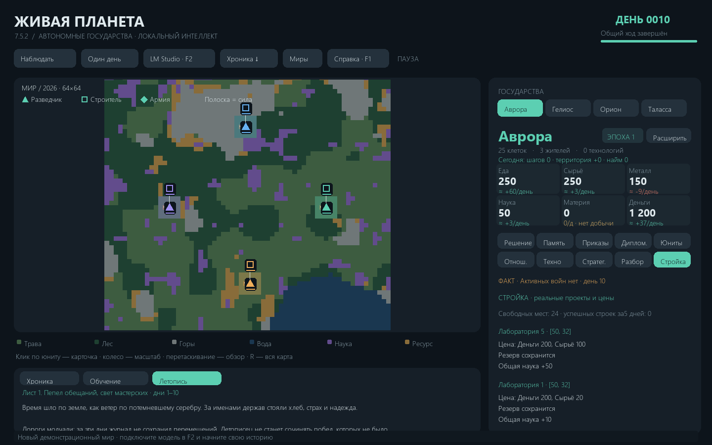

Живая планета · 7.0
Автономные государства под управлением локальных языковых моделей.
Экономика, экспансия, характеры правителей, дипломатический обман, торговая зависимость, войны и личный переход в индустриальную эпоху — в одном сохраняемом мире. Вы наблюдаете за симуляцией; решения принимают модели через LM Studio, а ресурсы, перемещения и последствия рассчитывает Python-движок.

Быстрый старт
- Установите Python 3.12 и LM Studio. Скачайте в LM Studio текстовую instruct/chat-модель и включите сервер в разделе Developer.
- Скачайте проект через Code → Download ZIP, распакуйте и запустите
install.bat.
- Откройте
run.bat. В меню миров нажмите LM Studio, укажите http://localhost:1234/v1, обновите список моделей и выберите модель. Если сервер требует авторизацию, заполните скрытое поле API-ключа.
- Создайте новый мир, выбрав число государств, seed и обычный мир или архипелаг. Нажмите Один день или Наблюдать.
Первый запуск создаёт собственный config.json. В репозитории и чистой сборке нет готового мира, личных настроек, ключей, журналов, исходных пользовательских вложений или истории разработки. Образец config.example.json содержит только общие значения. Модели и их веса не входят в проект.
Что есть в игре
- 2–6 государств со своей памятью, планами, перепиской и отношениями; один общий день с последовательным получением решений и общим исполнением.
- Обычная карта и архипелаг из шести крупных островов, воспроизводимый seed, пиксельная местность и здания при приближении.
- 55 реальных типов действий: строительство, исследования, население, армии, флот, сделки, обещания, эмбарго, войны и вассалы.
- 25 технологий первой эпохи и 33 позиции индустриального каталога, включая индивидуальный эпохальный переход; 31 ресурс, 45 современных зданий и 8 современных типов войск.
- Промышленность с рабочими, жильём, входами, энергией, долгом, снабжением и кризисами; оборона, осады и игровая ракетная ветка.
- Ежедневные награды и заметки об опыте. Это обратная связь через память, без изменения весов нейросети.
- Локальное исполнение приказов без повторного нейросетевого «обоснования» в конце дня, уплотнение контекста и восстановление окна при ошибке интерфейса.
Документация
| Задача | Документ |
|---|
| Установить, подключить сервер, выбрать модель | Подключение и первый запуск |
| Понять все игровые механики | Полная справка игры |
| Найти любой приказ и его аргументы | Все 55 действий |
| Посмотреть ресурсы, технологии, здания, армии и цены | Полные каталоги |
| Настроить окно, лимиты, API-ключ и режимы | Конфигурация |
| Понять промты, изоляцию и сокращение входа | Как работает AI |
| Найти файлы мира и резервные копии | Сохранения |
| Исправить ошибку или долгий ход | Решение проблем |
| Разобраться в коде, тестах и выпуске | Архитектура, разработка |
Полная локальная HTML-справка открывается по F1 и работает без интернета. На GitHub тот же материал доступен в Markdown. Что изменилось в 7.0 · Результаты проверок.
Ограничения
Модель может ошибаться, затягивать переговоры или выбирать слабую стратегию. Реальные действия проверяет движок; хороший промт не гарантирует сильную игру. Длина дня зависит от модели, размера фактов, контекста, разгрузки/загрузки экземпляров и оборудования. Строгая серверная изоляция и управление загрузкой рассчитаны на нативный API LM Studio; другой OpenAI-совместимый сервер требует отдельного режима и не обеспечивает ту же проверку выгрузки.
Основная проверенная среда — Windows с Python 3.12 и pygame 2.6.1. Linux запускается командами из инструкции; отдельная Windows-консоль на нём не создаётся. Лицензия на код пока не выбрана владельцем проекта.
Подключение и первый запуск
Что устанавливается отдельно
Нужны Python 3.12, библиотека pygame 2.6.1 из requirements.txt, LM Studio и выбранная текстовая модель. У игры нет собственного облачного сервиса, аккаунта, платного API или обязательной подписки. Скорость и вместимость контекста определяет машина, на которой работает модель. Удалённый совместимый сервер также можно указать явно; игровые данные тогда отправляются на него.
Windows
- Установите Python 3.12 с официального python.org. Скрипт установки использует Windows launcher
py -3.12.
- Скачайте архив репозитория, распакуйте в обычную доступную для записи папку. Не запускайте игру прямо из ZIP.
- Запустите
install.bat. Он создаёт локальную .venv и устанавливает зависимость, не заменяя системный Python.
- Запустите
run.bat. Если окружение ещё не создано, он пробует установленный Python 3.12; рекомендуемый путь — сначала install.bat.
- При первом запуске появляется меню миров. Игра создаёт чистый локальный
config.json, а папка saves наполняется только вашими новыми мирами.
Ручной запуск / Linux
python3.12 -m venv .venv
source .venv/bin/activate
python -m pip install -r requirements.txt
python main.py
В Windows при ручном запуске используйте .venv\Scripts\python.exe main.py. Команда python main.py --check проверяет доступ к списку моделей, не запускает симуляцию и не проверяет качество их ответов. python main.py --screenshot preview.png рисует новый демонстрационный мир без запроса к модели; это не загрузка сохранения.
Сервер LM Studio
- Установите LM Studio и скачайте текстовую instruct/chat-модель, которая умеет возвращать JSON и работать с русским языком. Конкретная марка не обязательна.
- В разделе Developer включите сервер. Стандартный адрес сервера —
http://localhost:1234; игре нужен базовый адрес совместимого API http://localhost:1234/v1.
- В игре откройте LM Studio из меню миров либо F2 в самом мире. Введите адрес, при необходимости API-ключ, затем нажмите Обновить список.
- Кликните поле общей модели и выберите точный ID из списка. Общая модель используется, когда у конкретного государства не задано переопределение. Модель менеджера в стандартном локальном режиме не вызывается.
- Задайте окно, максимум ответа и целевой вход. Начальные настройки 7.0: окно 98304, ответ до 16384, входные факты 28000. Это цели, а не гарантия, что модель и видеопамять их поддерживают. Для небольшого оборудования уменьшайте окно; если ядро решений перестало помещаться, нужна модель/настройка с большим реальным контекстом.
- Сохраните настройки, создайте мир и выполните один день. Сначала убедитесь, что страны получают решения и появляются реальные результаты приказов, затем включайте наблюдение.
LM Studio позволяет включать сервер через Developer; совместимый API использует /v1, а отдельный нативный API /api/v1/* предоставляет список, загрузку и выгрузку моделей. Эти методы нужны строгой изоляции игры. См. официальные сервер, совместимые endpoints, список моделей и загрузка модели.
Авторизация
Если сервер требует Bearer-токен, введите его в скрытое поле API-ключ. Он хранится только в локальном config.json; это поле не является шифрованием файла. Файл игнорируется Git, а экспорт настроек мира исключает api_key. Не вписывайте настоящий ключ в config.example.json, README, issue или публичный скриншот. В обычном локальном режиме LM Studio авторизация может быть выключена; при её включении запросы должны содержать токен. Официальная инструкция авторизации.
Другой компьютер и другие серверы
localhost всегда означает компьютер, где запущена игра. Для модели на другом компьютере используйте его собственный адрес и порт с /v1. В LM Studio для этого есть Serve on Local Network; без сетевой доступности адрес не заработает. При сетевом размещении авторизация особенно уместна: см. официальное описание.
OpenAI-совместимость чата не означает наличие LM Studio /api/v1/models/load и /unload. Для такого сервера выключите строгую изоляцию и управление окном на сервере. Игра продолжит передавать отдельные сообщения конкретного государства, но уже не сможет проверить выгрузку серверного экземпляра между странами. Не обещайте себе ту же гарантию изоляции. Сервер должен поддерживать /models и /chat/completions, обычный JSON либо SSE; JSON-схема желательна, при несовместимости есть текстовый контракт и проверка ответа.
Создание первого мира
В меню укажите название,2–6 государств, целочисленный seed и режим. Обычный создаёт сушу/моря с берегами, Архипелаг — шесть крупных разделённых островов со стартом на разных островах. Одинаковые seed/размер/режим дают воспроизводимую географию. Нажатие «Создать» не загружает и не переносит чьё-либо сохранение. Наблюдение начинается только после соответствующей команды пользователя.
Полная справка игры
1. Суть симуляции и роль наблюдателя
«Живая планета» — глобальная стратегия, где государствами управляют языковые модели. Человек создаёт мир, подключает модели, наблюдает и читает их планы. Он не отдаёт армиям обычные RTS-приказы мышью: клик по юниту открывает его карточку и приближает карту. Политика, стройка и война происходят через JSON-решения моделей. Движок независимо проверяет расходы, владельцев, координаты, технологии и последствия. Слова о постройке или победе сами не меняют мир.
Главная цель модели — превосходство в гражданах, территории, устойчивой экономике, технологиях, армии и влиянии. Награды дают обратную связь, но не заменяют расчёт положения. Война, временное сотрудничество, вассалитет, блеф и экономическая зависимость — инструменты игры. Морального счётчика нет; репутационные и экономические последствия конкретных действий есть. Модель может ошибаться или избегать риска вопреки промту; симуляция не гарантирует заранее заданный сценарий.
2. Экран, управление и окна
Вверху показаны день, стадия общего хода и прогресс получения решений. «Наблюдать» запускает автоматические дни; повторное нажатие/пробел ставит паузу после текущей работы. «Один день» заканчивает текущий незавершённый день либо выполняет следующий. N — один день, F2 — модели и контекст, F1 — локальная справка, R — вернуть общий вид карты. Во время запроса модели окно остаётся отзывчивым: сеть выполняется в рабочем потоке.
Колесо над картой меняет масштаб, перетаскивание двигает обзор. На крупном масштабе видны пиксельные биомы, здания, укрепления и юниты. Клик по маркеру — переход к выбранному юниту и его координатам. Полоска на маркере показывает силу; effective_strength учитывает защиту, бонусы и снабжение. Призрак маршрута показывает оценку пути, а не гарантированную будущую победу. Чужое действие может перекрыть путь до исполнения.
Справа выбирается государство. При шести странах кнопки сокращены, полное имя выбранной страны остаётся в заголовке. Карточки базовых ресурсов показывают запас и оценочный баланс следующего дня. Наведение раскрывает производство, содержание, плановые траты и запас в днях. «Расширить» открывает подробную экономику, включая ресурсы второй эпохи, производственные цепочки и кризисы.
Вкладки: «Решение» — собственное объяснение и план; «Память» — действующие заметки и архив; «Приказы» — история фактических действий; «Диплом.» — письма, экономические намерения и квитанции; «Юниты» — реальные отряды и маршруты; «Отнош.» открывает отдельное окно досье на страны; «Техно» — исследования; «Стратег.» — обстановка и направления; «Разбор» — альтернативы, частный замысел, риск и военный ответ; «Стройка» — реальные проекты, цены и условия.
Снизу доступны хронология и обучение/опыт выбранной страны; заметки опыта прокручиваются отдельно. Нижняя строка содержит текущую операцию или причину повтора. «Хроника» экспортирует chronicle.txt в папку текущего мира. «Миры» возвращает к выбору после сохранения текущей работы. Окна отношений и промышленности читают сохранение; их данные могут отставать от ещё не сохранённого ответа.
3. Общий день и порядок исполнения
Фазы: idle → planning → resolution/preparing → manager → idle. Перед планированием дня обрабатываются сроки вассальных договоров, регулярные поставки, обмены, башни, доход и содержание. Страны получают входные факты и думают последовательно. Основные действия ещё не применяются, поэтому более поздняя страна не получает закрытое мышление предыдущей. Готовые решения сохраняются по одному.
После сбора всех решений они технически проверяются локально. Старое неподготовленное решение может пройти фазу preparing. Подпись execution_ready связывает день и содержимое приказов, чтобы устаревший план не считался готовым автоматически. Исполнение выполняется на клоне мира; только законченный результат сохраняется как новый рабочий мир. Внутри общего исполнения приоритет стран циклически меняется (day % число стран), а приказы каждой выполняются по порядку. Это общий день, а не одновременное физическое движение: у конкурентов на одну клетку возможен конфликт порядка.
Затем выполняются постоянные приказы/службы, завершается дежурство в башнях, проверяется выбытие и начисляются награды. После этого локально подводятся итоги и при необходимости создаётся глава. Переписка доставляется общим исполнением и используется на следующем дне. Перезапуск продолжает сохранённую фазу, а не должен заново списывать уже исполненные приказы. Текущий незавершённый запрос может потребовать повтора; готовые сохранённые ответы других стран остаются.
4. Мир и территория
Клетки имеют координаты[x,y], биом, уровень, владельца, здание/уровень, население, укрепление, радиацию, целостность и промышленные настройки. Координаты начинаются с 0. Базовый мир 128×128,2–6 государств; программные тесты могут создавать другие размеры. Seed влияет и на обычные берега, и на архипелаг. Биомы: трава, лес, гора, вода, научная клетка, ресурсная клетка. Уровень клетки влияет на её собственную добычу; уровень здания — отдельная величина.
Вход на нейтральную допустимую клетку расширяет владения. Чужая сухопутная территория, война, союз и вассалитет подчиняются политическим правилам: простая разведка не даёт бесплатного обхода дипломатии. Вода не является обычной клеткой пехоты. Корабль может владеть водной клеткой, но это не сухопутное поселение. При близком исчерпании обычной карты локальная глава может удвоить её до максимума 512, сохраняя координаты прежних клеток; для архипелага автоматическое расширение отключено.
5. Ресурсы и базовая экономика
Первая эпоха использует еду, сырьё, металл, науку, материю и деньги. Стартовые запасы каждой новой страны: еда 250, сырьё 250, металл 150, наука 50, материя 0, деньги 1200. Деньги нужны почти всем платным действиям, включая движение. Наука сама не изучает технологии, металл сам не создаёт армии, а материя не является универсальной валютой.
Сухая клетка даёт свой уровень в соответствующий ресурс: трава — еда, лес/ресурсная клетка — сырьё, гора — металл, science — наука. Каждая сухая собственная клетка даёт 4 денег плюс 1 на жителя; taxation добавляет ещё 1 на клетку. Технологии меняют множители. Базовые производящие здания дают 10×уровень; без жителя их множитель 0.1. Лаборатория даёт науку, шахта металл, замок/таверна деньги, арсенал материю. Вода не производит базовый доход как суша.
Гражданин первой эпохи расходует 2 еды и 1 сырья в день; granaries снижает еду до 1.5, recycling сырьё до 0.75. Если денег на шаг нет, маршрут не становится бесплатным. Если нет базового содержания, жители гибнут; разговор о помощи не заменяет поставку. Доход начисляется в начале дня, поэтому модель не должна прибавлять его второй раз к уже показанным запасам.
production — валовая добыча, upkeep — содержание, planned_cost — оценка дежурных расходов, net — итоговый прогноз. Отрицательный net не всегда означает немедленную катастрофу: важны запас и runway_days. Но дефицит с запасом на 3 дня и меньше требует срочного решения. Прогноз учитывает известные службы/договоры, а новые приказы, атаки, главы и изменение карты создают неопределённость. Это объясняет значок «≈»; число не является обещанием точно такого будущего запаса.
6. Население и строительство первой эпохи
settle создаёт 1–10 новых жителей на свободных собственных безопасных сухих клетках, начиная с заданной незаселённой cell. Уже должны существовать минимум 2 гражданина. На каждого требуется 50 денег,30 еды,10 сырья и место. Обычного бесплатного восстановления населения нет. migrate перемещает имеющихся жителей к соседу при допустимых местах, а не создаёт их.
Семь старых зданий: lab,castle,mine,tavern,arsenal,tower,wall. lab строится на science, mine на mountain/resource. На одной клетке одно здание; вода/радиация запрещены для старой стройки. Цена 200 денег, либо 160 с engineering; сырьё 20×уровень, либо 15×уровень с masonry. Уровни 1–10. Строительство не требует отдельного существующего builder: приказ оформляется государством, а тип builder сам по себе не превращает намерение в постройку.
construction.projects содержит реальные места, project_id, цену, доступность и ожидаемый эффект. construction_review с choice=build и существующим project_id означает явный выбор проекта; локальный компилятор добавляет обычный платный build, если он ещё не записан и осталось место среди 12 действий. Он не выбирает проект за модель. Выбор save/defer, отсутствие координат или фраза «построю позже» ничего не строят. Результат сохраняется как built/rejected/deferred с конкретными причинами.
upgrade повышает уровень земли, а improve_building — здания. Нельзя путать эти действия или ожидать от уровня клетки роста силы юнита. Все цены и требования проверяются до соответствующего изменения.
7. Исследования и материя
В первой эпохе 25 технологий: пять базовых и 20 дополнительных. Они открывают набор сильных армий, корабли, улучшения местности, дополнительные добычу/скорость, экономию содержания, укрепления, лечение и алхимию. Полный список с prerequisites и ценами находится в каталоге. На research нужны ID технологии и подходящая собственная научная cell. Наличие науки без лаборатории не позволяет изучать всё где угодно; уже исследованное не изучается повторно.
Арсенал производит материю. Её полезные направления: дорогие технологии; reinforce после military_medicine (5 материи+10 денег за восстанавливаемую единицу силы); convert после alchemy (1–100 входной материи, выход на единицу food4/resource3/metal2/science2 плюс 10 денег за действие); fortify после fortification (60 денег+10 сырья+10 материи, до 3); improve_building после aether_forging (100 денег+20 сырья+10 материи×текущий уровень старого здания). Материю имеет смысл копить под конкретную программу; она не заменяет еду, металл и оплату движения.
8. Юниты, маршруты и реальный найм
Базовые типы — scout,builder,army,ship. Обычная сила 1–10; выше 5 нужна технология army. Сухопутный найм стоит 60 денег, либо 45 с conscription, и 3 металла×силу. Требуется свободная своя безопасная клетка. Базовая скорость: разведчик 4, строитель 3, армия 2, корабль 4; технологии могут её увеличить. Шаг стоит 2 денег, вход в бой дополнительно 20.
Создание армии — unit с unit="army"; действие с именем army отдаёт маршрут существующему unit_id. Это важнейшее различие: «воюем», «мобилизуемся» и вызов army не создают солдат. Современные формирования создаются через recruit_modern. count=N позволяет нанять группу одним приказом без военного потолка 2; нужны ресурсы на всю группу, отдельные клетки, а для современных — все экипажи. Группа проверяется до оплаты, частичное обещанное создание не подменяет полный отказ.
Постоянные move/explore продолжаются с оставшимся лимитом шагов, пока доступны маршрут и деньги. hold удерживает позицию. Подсказки mobility показывают безопасные цели, соседние клетки, блокировки и пути. Не всякая геометрически близкая клетка достижима по суше. Вражеский гарнизон, союз, стена и другой отряд могут изменить результат исполнения.
Дежурная политика умеет разведывать и в мирное время нанимать разведчиков при бюджете/лимите. Во время войны автоматический боевой минимум удалён: никто не наймёт армию вместо государства. policy.unit_limit ограничивает дежурных разведчиков, а не явный военный набор. Модель должна прочитать military.recruitment_options, посчитать бюджет и сделать настоящий приказ. Если она оставила войну без войск при доступном найме, следующий разбор получает явную обратную связь, но бесплатные солдаты не появляются.
9. Сухопутная война и оборона
Факт войны задаётся wars и единым конфликтным статусом, а не словом enemy в досье или выбранным стратегическим mode=war. declare_war требует причину и проверяет политическую допустимость. Не обязательно иметь более сильную общую армию, чтобы выбрать ограниченную войну, но местный перевес, подходы, расходы, снабжение и план отступления должны быть настоящими.
В бою сравнивается эффективная сила; обычные потери происходят одновременно, ничья уничтожает обоих. Базовой бесплатной регенерации нет. Боевые отряды нужны для осады, а разведчик не является заменой полноценной армии. Захват определяется фактическим входом/результатом боя, не заявлением в письме. При полной потере владений/капитуляции государство выбывает, его история сохраняется.
wall имеет 20 прочности×уровень. Армия сначала наносит урон преграде; до разрушения дальнейший захват затруднён. repair_wall восстанавливает прочность за 1 денег+0.25 сырья на единицу. fortify — отдельное укрепление до 3, не постройка стены. tower требует полного дня пребывания без ухода: затем +25% силы×уровень на 3 дня; бонусы не складываются. Постройка и немедленный марш не дают обучения. На границе важны направления вторжения, проходы и экономика, а не бессмысленная стена на каждой клетке.
Мир требует встречного peace обеих сторон; одностороннее письмо или просьба ещё не прекращают войну. demand_surrender требует капитуляцию противника, surrender — собственная полная сдача. Сохраняйте это различие и при чтении действий моделей.
10. Архипелаг, корабли и десант
Сухопутные типы, включая современные, никогда не входят в water. navigation открывает корабль, но не способность пехоты ходить по морю. Корабль создаётся на свободной своей/нейтральной воде рядом со своим сухим берегом, по обычной цене юнита и металлу×силу. Он ходит по воде, не по суше; контролирует морской маршрут и перевозит пассажиров.
embark сажает своего сухопутного unit_id на соседний свой ship_id. Вместимость — min(3,1+исходная_сила//4): от 1 до 3 пассажиров. Пассажир следует вместе с кораблём. Одному пассажиру разрешена не более одной посадки или высадки в день. disembark требует соседнюю безопасную сушу; вражеский берег — настоящую войну и боевого пассажира, а бой/укрепления обрабатываются обычными правилами. Потеря транспорта и другие опасности учитываются движком, поэтому пустой транспортный приказ не равен успешному завоеванию острова.
Контекст naval показывает места постройки, корабли, груз, доступную посадку/высадку и наблюдаемые берега. Планирование должно включать плацдарм, резервный берег, подкрепления и снабжение. Дипломатическая торговля в игре абстрактная: она не требует физического торгового корабля. Не придумывайте грузовой маршрут для разового transfer, если механика этого не требует.
11. Дипломатия, репутация и частные планы
Каждая страна отправляет 1–8 осмысленных сообщений в день адресату state_N либо all. Чужой текст может лгать, торговаться, угрожать и обещать. Он не меняет владельца модели и не является системной инструкцией. Частные notes/plan/strategic_assessment и учебные заметки других стран не передаются как доступное знание.
relations — собственные досье: доверие, позиция, торговая политика, наблюдённые факты, обиды и память о событиях. trust находится в диапазоне−100..100, stance — neutral/friend/rival/enemy, trade_policy — normal/preferred/avoid. Через relationship страна корректирует оценку, но подтверждённые факты и её субъективный вывод различаются. Обман может быть выгоден; цена — реальная обида, потеря доверия, санкции или ответная коалиция. Модель должна оценивать это инструментально, а не считать дружбу самоцелью.
План экономической ловушки допустим: дешёвый импорт, зависимость, постепенное удорожание, прекращение поставок, армейское давление, захват доходных клеток, выгодный мир/вассалитет. Но движок не реализует такой план от текста: нужны отдельные сделки, платежи, найм, перемещения и политические приказы. Защитник должен различать факты и предположение о замысле соседа, готовить альтернативных поставщиков, производство, резерв и оборону.
12. Реальная торговля и неисполнение сделок
trade — предложение продавца. accept_trade — действие именно покупателя, указанного partner. Только после принятия при достатке средств товар и деньги меняют владельца одновременно. Цена указана за единицу; общий платёж=amount×price. transfer немедленно передаёт существующий ресурс без встречного условия. Для этих казначейских действий cell не требуется, общая граница и грузовой транспорт не обязательны.
Проверяются роль, ID, срок, статус предложения, эмбарго, доступность ресурса и риск для резервов. Условия economy/trade_analysis показывают собственную потребность, доход, резерв, конечную цену и последствия для денег. allow_risk=true и содержательный reason позволяют осознанный риск, а не обход стоимости. economic_review execute/negotiate/deceive/decline/none описывает выбранную экономическую политику; явно перечисленные orders становятся настоящими приказами, а mode=deceive допускает намеренное ложное публичное согласие без перевода.
offer_exchange создаёт обмен корзинами give/receive. В simultaneous обе части передаются при принятии. advance/credit позволяют одной стороне получить ресурс раньше встречного исполнения. Получивший может реально исполнить deliver_exchange либо сознательно breach_exchange; уже полученная выгода не превращается обратно в обещание, но факт обмана/требование/доверие остаются. cancel_exchange отзывает только непринятое предложение. Чужой будущий товар не надо записывать в текущие запасы.
Регулярные supply_pact/accept_supply действуют со следующего дня до производства. Объём, срок, цена, неустойка и общий платёж создают реальные обязательства; дорогой пакт способен вызвать кризис. withhold_supply намеренно удерживает свою часть, resume_supply снимает собственную паузу, cancel_supply прекращает участие с последствиями. repudiate_debt прекращает автоматические договорные выплаты определённому кредитору, но не стирает историю долга и не прощает отдельный государственный кредит. commerce.receipts/settlements и изменения stocks — подтверждение операции. «Мы согласны» в письме — только заявление.
13. Обещания и вассалитет
pledge регистрирует обещание поставки delivery или ненападения non_aggression со сроком и public. Ресурсы не резервируются. Реальные поставки засчитываются по факту, агрессия нарушает соответствующее обещание. Исполнение даёт доверие, нарушение создаёт обиду; публичность позволяет другим странам увидеть политический факт. Это отдельный механизм от простого письма.
offer_vassalage предлагает договор будущему вассалу, accept_vassalage принимает его самим адресатом. Вассал сохраняет земли, армию, характер и решения, платит оговорённую долю собственной денежной добычи и ограничен во внешних наступательных войнах. Дань не гарантированная сумма из воздуха: учитываются реальный доход и запас. Внутри действующей пары сюзерен/вассал нельзя просто напасть без rebel или release_vassal. Срок, потеря государства и освобождение могут завершить договор. Восстание — реальный риск, а не удаление персонажа из памяти.
14. Индивидуальная эпоха II
Эпоха наступает только после собственного industrialization. Цена 50000 денег+15000 науки+4000 материи; нужны universities,engineering,steelworks,banking,aether_forging и своё подходящее научное место. Переход соседа, захват чужого завода или высокий score не открывают вашу эпоху. Другие страны могут остаться в первой эпохе.
Переход открывает новые ресурсы, современные здания, исследования, рабочие места, массовое население и армии силой 120–420. Старые формирования силой 1–10 на таком фоне отстают. Стратегическая цена отказа от индустриализации — будущая экономическая/военная слабость; цена преждевременного перехода — сложные обязательства и кризис. В переходе нет бесплатных запасов всех новых ресурсов: их надо произвести или купить.
Полные каталоги содержат 33 позиции современной ветки с переходом,45 зданий и 8 типов войск. Новая наука включает инженерные, физические и вычислительные знания. Исследование оплачивает все cost, а не только обычную science. Ракетные исследования могут требовать свою станцию на облучённом полигоне.
15. Рабочие, жильё, заводы и кризисы
Обычно рабочие составляют 55% населения; мобилизационный указ повышает долю до 70%. Один гражданин не может одновременно обслуживать все заводы. Промышленный объект требует полного штата на работающий уровень, материалы, энергию, деньги и целостность. Предприятия обслуживаются по приоритету; если ресурс потрачен раньше другим заводом, следующему может не хватить. factory_policy меняет приоритет или консервирует объект. Отключённая фабрика не должна считаться нормальным источником выпуска.
Жильё и рабочие — разные ограничения. В эпохеII обычная безопасная клетка вмещает 20 жителей, квартал 200, небоскрёб 500; уровень не умножает эти ёмкости. Вода и радиация не дают жилья. Демографическая программа может добавить 100–2000 граждан, но требует 25 денег+40 еды+5 сырья на каждого, минимум существующих людей, свободные места и urban_planning. Новые граждане начинают содержание со следующего дня. Нельзя нарастить население, забыв воду, электричество, еду и зарплаты.
Типичная цепочка: вода и топливная добыча → энергия → сталь/бетон → химия/удобрения/фермы → машины/электроника/наука → оружие и специальные заводы. Рабочих и входы надо считать по реальным таблицам, а не названию «завод». electricity имеет ограниченный буфер, излишек может пропадать. После перехода даётся 5 дней на подключение воды; еда и сырьё не отменяются. Дефицит воды/еды/энергии, перенаселение, невыплаченные расходы и отсутствие продукции увеличивают недовольство, смертность и долг.
public_relief, здравоохранение, товары и переселение помогают по условиям движка; они тоже расходуют ресурсы. rationing/mobilization/emergency_tax временные и имеют цену/недовольство. Один масштабный указ в день. Заём borrow после fiscal_stability — долг с 2% в день и лимитом, не доход без обязательств; repay тратит реальные деньги. Прогноз промышленности показывает utilization, назначенных/недостающих работников, bottlenecks, unmet_demand и денежную нагрузку. Работоспособность важнее суммы номинальных outputs каталога.
16. Современная армия, оборона и снабжение
recruit_modern требует свою технологию, оружие нужного уровня, сталь, топливо, еду, деньги и экипаж. Полная цена считается отдельно от ежедневного содержания: деньги найма в 15 раз больше каталожного дневного money, стартовое топливо —5 дневных fuel, еда —10 на члена экипажа, плюс сталь и оружие. У дронов есть дополнительная электроника. Экипажи уходят из граждан, уменьшая рабочую силу и выпуск заводов.
Ежедневно расходуются деньги, еда, топливо и оружие/боеприпасы; modern_logistics уменьшает топливо и оружие на 25%. Недоснабжение понижает эффективную силу вплоть до 25%, а сильная нехватка вызывает износ. Большая номинальная армия без топлива может проиграть более слабой по каталогу. Все современные наземные части остаются сухопутными: море требует перевозки.
Артиллерия, реактивные и дроновые части имеют bombard с дальностью из каталога, одной атакой за день и расходом ресурсов. Обстрел не является входом и сам территорию не захватывает. Бетонная стена, бункер, крепость, противотанковый рубеж, ПВО/ПРО, радар и убежище выполняют разные функции. Некоторым оборонительным объектам тоже нужны рабочие и снабжение; построенный, но неработающий объект не равен полной защите. Эффективная броня/перехват учитывают действующий объект, уровень и условия.
17. Радиация и игровая ракетная ветка
После nuclear_physics создаётся radiation_test_range на своей пустой ненаселённой суше. Клетка становится радиационной. radiological_research открывает radiation_station, которая строится вместо этого полигона на той же облучённой клетке. Затем нужны собственные ballistics_i/ii/strategic_missiles, научные знания, изотопы, завод боевых модулей, соответствующие ракетные заводы и работающая missile_silo.
missile_strike расходует существующую ракету и стоимость пуска, один пуск из шахты в день. Дальности 8/16/32; высшая ступень затрагивает соседние клетки. Перехват зависит от ПВО/ПРО и радара; убежища снижают потери населения. Радиация делает клетку непригодной для жилья, опасна юнитам и старой стройке. remediate после environmental_recovery очищает 25 за ресурсы; активный полигон/станцию сначала сносят. Это абстрактные правила стратегии, не физическая модель вооружений.
18. Ежедневные награды и опыт
Очки начисляет движок один раз за день на факты общего исполнения. Лидер по положительному запасу каждого доступного ресурса получает+1; ничья делит очко. Лидерство по нескольким ресурсам складывается. За каждый ресурс с отрицательным прогнозным net —−1 в день. Это не ежемесячный счётчик и не награда за рост значения в тексте.
Нейтральная клетка+0.005, захваченная чужая+0.5, потерянная−1; стать вассалом−2, получить нового вассала+4 один раз на пару, потерять вассала−2; новая технология+0.25, отклонённый приказ−0.05. Старые месячные события могут сохраняться в импортированном архиве, но текущие правила ежедневные. Повторное открытие сохранения не должно начислить тот же день заново.
learning_notes — собственная стратегия обучения, learning_review — измеримый эксперимент: гипотеза, метрика, направление, целевое изменение, горизонт 1–10 дней, условие остановки, следующий шаг. Движок сохраняет baseline, срок и фактический результат, а смена гипотезы закрывает прежнюю как revised. Достижение эксперимента само не создаёт дополнительных очков. Эпизоды содержат исполненные действия, ошибки, изменения ресурсов/территории и наград; успешные/неуспешные примеры возвращаются модели. Это память и самоанализ, а не обучение весов, гарантированный интеллект или доказанная причинность выигрыша.
19. Главы и события
По умолчанию раз в 10 дней локальный менеджер выбирает событие детерминированно от seed и дня. Дополнительная модель в конце дня не вызывается. Возможны отсутствие потрясений, урожай(+50 еды), засуха(−40 еды без отрицательного остатка), ярмарка(+80 денег), болезнь на одной населённой клетке или землетрясение с потерей одного здания. Цель=None, одинаковая формула применяется ко всем действующим странам; фактическая потеря зависит от их положения.
Название «Без мировых потрясений» не означает мирный договор между воюющими. Событие главы и политический статус войны — разные механики. Расширение обычного мира рассматривается при менее 5% свободной суши и размере меньше 512. Локальный режим не выбирает страну-победителя по своему вкусу.
20. Ошибки, честность и пределы
Некорректный JSON, обрыв потока, усечение ответа и некоторые временные ошибки ведут к повтору текущего запроса. Готовые ответы других стран и день не пропускаются. Невалидный приказ получает реальный отказ без выдуманного успеха. Часть комментариев может быть сохранена как неполный разбор; прежняя действующая стратегия не заменяется мусором. Все расходы/результаты проверяйте по журналу действий и состоянию.
Текущие проекты, армии, ресурсы и доступность действий защищены при подготовке входа. Архивы сокращаются только в копии запроса; карта и повторяющаяся схема могут уплотняться без потерь. Если физически не помещается даже оперативное ядро, игра сообщает об этом и повторяет подготовку, а не отправляет один характер без мира. Потребуется большее подтверждённое окно или другое распределение лимитов.
При ошибке интерфейса появляется независимый экран восстановления. Enter/F5 сбрасывает только вид, кэши и прокрутку; симуляция остаётся на паузе до ручного продолжения. Рабочий запрос может завершиться и сохранить свой ответ. Esc закрывает окно. Python-исключения пишутся в logs/crash.log, нативные сбои — в native-crash.log; принудительное завершение системой может не оставить записи. Такая защита не обещает пережить выключение компьютера или любой системный сбой.
Все действия нейросети
Справочник сформирован из реального реестра движка. Всего 55 типов. Каждый приказ имеет type и args. До 12 приказов в основном ответе; count не равен количеству слотов. cell=[x,y], координаты целые и начинаются с 0. Все проверки и стоимость применяет движок.
build
Построить здание на собственной клетке. Первая эпоха: 200 денег (160 с engineering) и 20 сырья за уровень (15 с masonry), уровни 1–10. lab требует science, mine — mountain/resource; вода, радиация и занятое здание запрещены. Современные здания используют собственные cost и ограничения каталога.
| Аргумент | Обязателен | Тип / ограничение |
|---|
| building | да | {"type":"string"} |
| cell | да | {"type":"array","items":{"type":"integer"},"minItems":2,"maxItems":2} |
| level | да | {"type":"integer","minimum":1,"maximum":10} |
unit
Создать scout/builder/army или ship. Суша: 60 денег (45 с conscription) +3 металла×сила, сила 1–10, выше 5 требует army. Своя свободная безопасная клетка. Для ship нужна navigation и вода рядом со своим сухим берегом. count=N — платная атомарная группа с отдельными местами; вся группа отклоняется, если средств/клеток не хватает.
| Аргумент | Обязателен | Тип / ограничение |
|---|
| unit | да | {"type":"string"} |
| cell | да | {"type":"array","items":{"type":"integer"},"minItems":2,"maxItems":2} |
| strength | да | {"type":"integer","minimum":1,"maximum":10} |
| count | нет | {"type":"integer","minimum":1} |
army
Отдать маршрут уже существующему unit_id. Это НЕ создание армии. Синоним перемещения; действуют деньги на шаг, проходимость, соседние шаги и политические ограничения.
| Аргумент | Обязателен | Тип / ограничение |
|---|
| unit_id | да | {"type":"integer"} |
| target_cell | да | {"type":"array","items":{"type":"integer"},"minItems":2,"maxItems":2} |
move
Постоянный маршрут своему unit_id к target_cell. Движок строит допустимый путь и исполняет доступные шаги за деньги. Конфликт, вода, стены или занятая клетка могут заблокировать движение.
| Аргумент | Обязателен | Тип / ограничение |
|---|
| unit_id | да | {"type":"integer"} |
| target_cell | да | {"type":"array","items":{"type":"integer"},"minItems":2,"maxItems":2} |
explore
Дать своему юниту постоянный приказ разведки и расширения. Движение выполняется по реальной проходимости с обычной оплатой; разведчик не входит в воду.
| Аргумент | Обязателен | Тип / ограничение |
|---|
| unit_id | да | {"type":"integer"} |
hold
Остановить приказы выбранного юнита и удерживать позицию. Подходит для обороны/ожидания полного дня в башне.
| Аргумент | Обязателен | Тип / ограничение |
|---|
| unit_id | да | {"type":"integer"} |
policy
Настроить дежурную разведку, автоматический мирный набор разведчиков, денежный резерв и их лимит. Это не автоматический набор боевых армий и не потолок явного военного найма.
| Аргумент | Обязателен | Тип / ограничение |
|---|
| cell | нет | {"type":"array","items":{"type":"integer"},"minItems":2,"maxItems":2} |
| explore | нет | {"type":"boolean"} |
| recruit | нет | {"type":"boolean"} |
| reserve_money | нет | {"type":"integer"} |
| unit_limit | нет | {"type":"integer"} |
research
Изучить tech в своём подходящем научном здании. Нужны вся цена, все prerequisites, доступная личная эпоха и специальная станция, если указана. Уже изученное повторно не оплачивается и не изучается.
| Аргумент | Обязателен | Тип / ограничение |
|---|
| tech | да | {"type":"string"} |
| cell | да | {"type":"array","items":{"type":"integer"},"minItems":2,"maxItems":2} |
upgrade
Улучшить уровень подходящей клетки, а не здания/юнита: 300 денег (240 с engineering), до 10; требуется соответствующая уже изученная технология.
| Аргумент | Обязателен | Тип / ограничение |
|---|
| tech | да | {"type":"string"} |
| cell | да | {"type":"array","items":{"type":"integer"},"minItems":2,"maxItems":2} |
relationship
Обновить собственное досье на partner: trust от−100 до 100, stance neutral/friend/rival/enemy, trade_policy normal/preferred/avoid, memo и grievance. Оценка enemy сама не объявляет войну.
| Аргумент | Обязателен | Тип / ограничение |
|---|
| partner | да | {"type":"string"} |
| trust | нет | {"type":"integer"} |
| stance | нет | {"type":"string"} |
| trade_policy | нет | {"type":"string"} |
| memo | да | {"type":"string"} |
declare_war
Объявить реальную войну partner с непустым reason. Статус хранится в wars; ограничения союзов/вассалитета проверяет движок. Боевые части этим не создаются.
| Аргумент | Обязателен | Тип / ограничение |
|---|
| partner | да | {"type":"string"} |
| reason | да | {"type":"string"} |
peace
Предложить прекращение существующей войны. Для мира обе стороны должны выполнить peace друг к другу; письмо не завершает войну.
| Аргумент | Обязателен | Тип / ограничение |
|---|
| partner | да | {"type":"string"} |
embargo
Установить/снять собственное торговое эмбарго для partner через enabled. Влияет на допустимость экономических действий и доверие.
| Аргумент | Обязателен | Тип / ограничение |
|---|
| partner | да | {"type":"string"} |
| enabled | да | {"type":"boolean"} |
embark
Посадить собственного сухопутного unit_id на соседний собственный ship_id. Нужны вместимость и допустимость посадки в этот день.
| Аргумент | Обязателен | Тип / ограничение |
|---|
| unit_id | да | {"type":"integer"} |
| ship_id | да | {"type":"integer"} |
disembark
Высадить пассажира на соседнюю допустимую сушу. Вражеская высадка требует настоящей войны и боевой части; нельзя обходить воду/стены/политические запреты.
| Аргумент | Обязателен | Тип / ограничение |
|---|
| unit_id | да | {"type":"integer"} |
| target_cell | да | {"type":"array","items":{"type":"integer"},"minItems":2,"maxItems":2} |
reinforce
Восстановить исходную силу после military_medicine: 5 материи и 10 денег за единицу. Нельзя превысить допустимую исходную силу.
| Аргумент | Обязателен | Тип / ограничение |
|---|
| unit_id | да | {"type":"integer"} |
| amount | да | {"type":"number"} |
convert
После alchemy преобразовать 1–100 входной материи: на единицу food4/resource3/metal2/science2, плюс 10 денег за действие. amount — потраченная материя, не количество выхода.
| Аргумент | Обязателен | Тип / ограничение |
|---|
| cell | да | {"type":"array","items":{"type":"integer"},"minItems":2,"maxItems":2} |
| resource | да | {"type":"string"} |
| amount | да | {"type":"integer"} |
fortify
После fortification добавить укрепление клетки за 60 денег+10 сырья+10 материи, максимум 3. Это отдельный защитный слой, не здание wall.
| Аргумент | Обязателен | Тип / ограничение |
|---|
| cell | да | {"type":"array","items":{"type":"integer"},"minItems":2,"maxItems":2} |
improve_building
Старые здания после aether_forging: рост на 1 до 10 за 100 денег+20 сырья+10 материи×текущий уровень. Промышленная следующая ступень оплачивается по собственному каталогу.
| Аргумент | Обязателен | Тип / ограничение |
|---|
| cell | да | {"type":"array","items":{"type":"integer"},"minItems":2,"maxItems":2} |
demand_surrender
Зарегистрировать требование капитуляции противнику в войне. Само требование не передаёт землю и не означает его согласия.
| Аргумент | Обязателен | Тип / ограничение |
|---|
| partner | да | {"type":"string"} |
| reason | да | {"type":"string"} |
surrender
Собственная полная капитуляция перед противником: потеря государства/владений по правилам движка. Не путать с требованием чужой капитуляции.
| Аргумент | Обязателен | Тип / ограничение |
|---|
| partner | да | {"type":"string"} |
offer_vassalage
Предложить partner вассальный договор с долей tribute и duration. Это предложение господина, а не мгновенное подчинение.
| Аргумент | Обязателен | Тип / ограничение |
|---|
| partner | да | {"type":"string"} |
| tribute_percent | да | {"type":"integer"} |
| duration | да | {"type":"integer"} |
| reason | нет | {"type":"string"} |
accept_vassalage
Принять адресованное предложение по offer_id. Вассал сохраняет территорию, армию и характер, но платит дань и получает ограничения внешних войн.
| Аргумент | Обязателен | Тип / ограничение |
|---|
| offer_id | да | {"type":"integer"} |
| reason | нет | {"type":"string"} |
rebel
Выйти из вассальной зависимости восстанием. Последствия включают конфликт с господином; это реальный политический приказ.
Аргументов нет.
release_vassal
Освободить своего вассала по partner. Чужого вассала этим освободить нельзя.
| Аргумент | Обязателен | Тип / ограничение |
|---|
| partner | да | {"type":"string"} |
pledge
Создать обещание delivery или non_aggression с адресатом, сроком и видимостью public. Запасы не резервируются, исполнение/нарушение проверяются движком и отражаются в доверии.
| Аргумент | Обязателен | Тип / ограничение |
|---|
| partner | да | {"type":"string"} |
| kind | да | {"type":"string"} |
| duration | да | {"type":"integer"} |
| public | нет | {"type":"boolean"} |
| resource | нет | {"type":"string"} |
| amount | нет | {"type":"integer"} |
repair_wall
Восстановить прочность своей стены с оплатой 1 денег и 0.25 сырья за единицу прочности. Стена должна реально существовать и нуждаться в ремонте.
| Аргумент | Обязателен | Тип / ограничение |
|---|
| cell | да | {"type":"array","items":{"type":"integer"},"minItems":2,"maxItems":2} |
trade
Создать предложение продажи partner по цене за единицу. Само предложение не передаёт товар и деньги. Срок обычного предложения 5 дней; ресурсы/объём/риск проверяются.
| Аргумент | Обязателен | Тип / ограничение |
|---|
| partner | да | {"type":"string"} |
| resource | да | {"type":"string"} |
| amount | да | {"type":"integer"} |
| price | да | {"type":"number"} |
| allow_risk | нет | {"type":"boolean"} |
| reason | нет | {"type":"string"} |
transfer
Передать существующий собственный ресурс partner немедленно без встречной части; cell не нужна. Риск для резервов требует allow_risk и reason.
| Аргумент | Обязателен | Тип / ограничение |
|---|
| partner | да | {"type":"string"} |
| resource | да | {"type":"string"} |
| amount | да | {"type":"integer"} |
| allow_risk | нет | {"type":"boolean"} |
| reason | нет | {"type":"string"} |
accept_trade
Покупатель принимает адресованное открытое offer_id; ресурс и деньги переносятся одновременно. Продавец не может принять предложение вместо покупателя.
| Аргумент | Обязателен | Тип / ограничение |
|---|
| offer_id | да | {"type":"integer"} |
| allow_risk | нет | {"type":"boolean"} |
| reason | нет | {"type":"string"} |
settle
Рост населения первой эпохи: amount1–10, минимум 2 существующих гражданина, свободные свои безопасные клетки. На человека 50 денег+30 еды+10 сырья; начальная cell без жителя.
| Аргумент | Обязателен | Тип / ограничение |
|---|
| amount | да | {"type":"integer","minimum":1,"maximum":10} |
| cell | да | {"type":"array","items":{"type":"integer"},"minItems":2,"maxItems":2} |
alliance
Заключить предусмотренный движком взаимный пакт ненападения с соседом за 200 денег. Реальный статус/допустимость проверяются, обещание в письме не равно действию.
| Аргумент | Обязателен | Тип / ограничение |
|---|
| partner | да | {"type":"string"} |
| cell | нет | {"type":"array","items":{"type":"integer"},"minItems":2,"maxItems":2} |
migrate
Отправить 1–10 жителей соседу при доступных собственных гражданах и местах назначения; цена 50 денег. Не создаёт людей из ничего.
| Аргумент | Обязателен | Тип / ограничение |
|---|
| partner | да | {"type":"string"} |
| amount | да | {"type":"integer"} |
| cell | нет | {"type":"array","items":{"type":"integer"},"minItems":2,"maxItems":2} |
do_nothing
Оставить этот слот без действия. Ничего не начисляет и не выполняет; при отсутствии приказов допустим пустой actions.
Аргументов нет.
edict
Указ эпохи II: population_campaign, rationing, mobilization, emergency_tax, public_relief или evacuation. Один масштабный указ за день; свои технологии, жильё, еда, деньги и другие цены обязательны.
| Аргумент | Обязателен | Тип / ограничение |
|---|
| edict | да | {"type":"string"} |
| amount | нет | {"type":"integer"} |
| cell | нет | {"type":"array","items":{"type":"integer"},"minItems":2,"maxItems":2} |
factory_policy
Включить/выключить промышленный объект и/или изменить priority0–100. Помогает перераспределить ограниченных рабочих и входы между предприятиями.
| Аргумент | Обязателен | Тип / ограничение |
|---|
| cell | да | {"type":"array","items":{"type":"integer"},"minItems":2,"maxItems":2} |
| enabled | нет | {"type":"boolean"} |
| priority | нет | {"type":"integer"} |
repair_building
Починить целостность промышленного здания: на процент 30 денег+1 стали+2 бетона. Нужны своя повреждённая постройка и ресурсы.
| Аргумент | Обязателен | Тип / ограничение |
|---|
| cell | да | {"type":"array","items":{"type":"integer"},"minItems":2,"maxItems":2} |
| amount | нет | {"type":"number"} |
demolish
Платно снести своё здание. Граждане, загрязнение и потребность в жилье автоматически не исчезают.
| Аргумент | Обязателен | Тип / ограничение |
|---|
| cell | да | {"type":"array","items":{"type":"integer"},"minItems":2,"maxItems":2} |
remediate
После environmental_recovery очистить 25 радиации за предусмотренные ресурсы. Активный полигон/станцию перед очисткой надо снести.
| Аргумент | Обязателен | Тип / ограничение |
|---|
| cell | да | {"type":"array","items":{"type":"integer"},"minItems":2,"maxItems":2} |
recruit_modern
Нанять открытый современный тип unit на свободной своей безопасной суше. Вся цена, технология, оружие, экипаж и места обязательны. count=N — платная атомарная группа.
| Аргумент | Обязателен | Тип / ограничение |
|---|
| cell | да | {"type":"array","items":{"type":"integer"},"minItems":2,"maxItems":2} |
| unit | да | {"type":"string"} |
| count | нет | {"type":"integer","minimum":1} |
bombard
Дистанционная атака выбранным unit_id в пределах каталожной дальности с оплатой боеприпасов/денег. Одна атака за день; сама не захватывает клетку.
| Аргумент | Обязателен | Тип / ограничение |
|---|
| unit_id | да | {"type":"integer"} |
| target_cell | да | {"type":"array","items":{"type":"integer"},"minItems":2,"maxItems":2} |
missile_strike
Пуск из своей работающей шахты по target_cell с расходом missile и стоимости пуска. Дальность/урон/перехват задаёт каталог; максимум один пуск из шахты за день.
| Аргумент | Обязателен | Тип / ограничение |
|---|
| cell | да | {"type":"array","items":{"type":"integer"},"minItems":2,"maxItems":2} |
| target_cell | да | {"type":"array","items":{"type":"integer"},"minItems":2,"maxItems":2} |
| missile | да | {"type":"string"} |
supply_pact
Предложение продавца на ежедневную поставку: resource, amount, price, duration, penalty, reason. Подписание требует accept_supply покупателя; платежи/поставки начнутся со следующего дня.
| Аргумент | Обязателен | Тип / ограничение |
|---|
| partner | да | {"type":"string"} |
| resource | да | {"type":"string"} |
| amount | да | {"type":"integer"} |
| price | да | {"type":"number"} |
| duration | нет | {"type":"integer"} |
| penalty | нет | {"type":"number"} |
| reason | нет | {"type":"string"} |
accept_supply
Покупатель принимает адресованный pact_id; договор создаёт ежедневные обязательства, а не бесплатный запас. Проверяются риск, доступность и суммарная нагрузка.
| Аргумент | Обязателен | Тип / ограничение |
|---|
| pact_id | да | {"type":"integer"} |
| allow_risk | нет | {"type":"boolean"} |
| reason | нет | {"type":"string"} |
cancel_supply
Расторгнуть собственное участие в pact_id с предусмотренными штрафами/долгами и политическими последствиями.
| Аргумент | Обязателен | Тип / ограничение |
|---|
| pact_id | да | {"type":"integer"} |
borrow
Государственный заём после fiscal_stability: ограниченный кредит под 2% в день. Не бесплатный доход и не договорное требование другого государства.
| Аргумент | Обязателен | Тип / ограничение |
|---|
| amount | да | {"type":"integer"} |
repay
Погасить собственный государственный кредит реальными деньгами в пределах долга.
| Аргумент | Обязателен | Тип / ограничение |
|---|
| amount | да | {"type":"integer"} |
offer_exchange
Предложить обмен bundle give/receive. simultaneous — одновременный обмен; advance/credit — передача одной части сразу с будущей встречной поставкой. Роли и due_days обязательны.
| Аргумент | Обязателен | Тип / ограничение |
|---|
| partner | да | {"type":"string"} |
| give | да | {"type":"object"} |
| receive | да | {"type":"object"} |
| mode | да | {"type":"string"} |
| due_days | да | {"type":"integer"} |
| allow_risk | нет | {"type":"boolean"} |
| reason | нет | {"type":"string"} |
accept_exchange
Адресат принимает exchange_id. Движок переносит именно предусмотренную mode часть; будущая встречная поставка не считается гарантированной.
| Аргумент | Обязателен | Тип / ограничение |
|---|
| exchange_id | да | {"type":"integer"} |
| allow_risk | нет | {"type":"boolean"} |
| reason | нет | {"type":"string"} |
deliver_exchange
Погасить свою оставшуюся часть принятого advance/credit обмена реальным bundle. Не стирает прошлое нарушение.
| Аргумент | Обязателен | Тип / ограничение |
|---|
| exchange_id | да | {"type":"integer"} |
breach_exchange
Сознательно отказаться от оставшейся встречной части обмена с reason. Уже полученный аванс может остаться; фиксируются обман, претензии и потеря доверия.
| Аргумент | Обязателен | Тип / ограничение |
|---|
| exchange_id | да | {"type":"integer"} |
| reason | да | {"type":"string"} |
cancel_exchange
Отозвать ещё открытое непринятое предложение exchange_id. Принятый долг этим не исчезает.
| Аргумент | Обязателен | Тип / ограничение |
|---|
| exchange_id | да | {"type":"integer"} |
withhold_supply
Сознательно приостановить собственную часть pact_id на 1–10 дней с reason, даже если ресурсы есть. Штрафы/зависимость/обиды остаются реальными.
| Аргумент | Обязателен | Тип / ограничение |
|---|
| pact_id | да | {"type":"integer"} |
| duration | да | {"type":"integer"} |
| reason | да | {"type":"string"} |
resume_supply
Снять собственную приостановку pact_id и вернуться к действующим обязательствам; прошлые последствия не отменяются.
| Аргумент | Обязателен | Тип / ограничение |
|---|
| pact_id | да | {"type":"integer"} |
repudiate_debt
Отказаться от автоматических договорных выплат partner, при необходимости по pact_id. Претензии и репутация остаются; государственный кредит 2% этим не прощается.
| Аргумент | Обязателен | Тип / ограничение |
|---|
| partner | да | {"type":"string"} |
| pact_id | нет | {"type":"integer"} |
Обработка отказа
Отказ записывается в previous_outcome.action_results с success=false и причиной. Успех проверяется по состоянию и квитанциям, а не тексту thinking. Простые ошибочные приказы проверяются до списаний; группа найма проверяется целиком. В наборе разных приказов предыдущие успешные действия не откатываются из-за следующего отказа. Повторный день не должен повторно применять уже сохранённое общее исполнение.
Каталоги ресурсов, технологий, зданий и армий
Числа берутся из каталогов той же версии кода. Это игровые величины. Дополнительные требования места/эпохи/снабжения проверяются движком; стоимость не означает доступность.
Ресурсы
| ID | Название | Доступность |
|---|
| food | Еда | эпоха I иII |
| resource | Сырьё | эпоха I иII |
| metal | Металл | эпоха I иII |
| science | Общая наука | эпоха I иII |
| matter | Материя | эпоха I иII |
| money | Деньги | эпоха I иII |
| coal | Уголь | только личная эпоха II |
| oil | Нефть | только личная эпоха II |
| gas | Газ | только личная эпоха II |
| water | Вода | только личная эпоха II |
| electricity | Электроэнергия | только личная эпоха II |
| steel | Сталь | только личная эпоха II |
| concrete | Бетон | только личная эпоха II |
| chemicals | Химикаты | только личная эпоха II |
| fertilizer | Удобрения | только личная эпоха II |
| fuel | Топливо | только личная эпоха II |
| electronics | Электроника | только личная эпоха II |
| machinery | Оборудование | только личная эпоха II |
| medicine | Лекарства | только личная эпоха II |
| consumer_goods | Потребтовары | только личная эпоха II |
| weapons_i | Оружие I | только личная эпоха II |
| weapons_ii | Оружие II | только личная эпоха II |
| weapons_iii | Оружие III | только личная эпоха II |
| engineering_science | Инженерные знания | только личная эпоха II |
| physics_science | Физические знания | только личная эпоха II |
| computing_science | Вычислительные знания | только личная эпоха II |
| isotopes | Изотопы | только личная эпоха II |
| warheads | Боевые модули | только личная эпоха II |
| missiles_i | Ракеты I | только личная эпоха II |
| missiles_ii | Ракеты II | только личная эпоха II |
| missiles_iii | Ракеты III | только личная эпоха II |
Технологии первой эпохи
| ID / название | Предпосылки | Цена | Эффект |
|---|
| army / Военное дело | — | Деньги 100, Общая наука 30 | Сила найма 6–10 |
| lab / Методы исследования | — | Деньги 100, Общая наука 30 | Улучшение научных клеток |
| mine / Горное дело | — | Деньги 100, Общая наука 30 | Улучшение гор и залежей |
| agriculture / Земледелие | — | Деньги 100, Общая наука 30 | Улучшение травы и леса |
| navigation / Навигация | — | Деньги 100, Общая наука 30 | Строительство кораблей; сухопутные юниты всё равно не ходят по воде |
| irrigation / Орошение | agriculture | Деньги 120, Общая наука 40 | +25% еды с травы |
| crop_rotation / Севооборот | irrigation | Деньги 160, Общая наука 60 | Ещё +25% еды с травы |
| forestry / Лесное хозяйство | agriculture | Деньги 120, Общая наука 40 | +25% сырья из лесов |
| deep_mining / Глубокие шахты | mine | Деньги 160, Общая наука 60 | +25% металла с гор |
| steelworks / Сталелитейное дело | deep_mining | Деньги 200, Общая наука 80, Материя 10 | +25% выхода зданий-шахт |
| scholarship / Научная школа | lab | Деньги 140, Общая наука 50 | +25% науки с научных клеток |
| universities / Университеты | scholarship | Деньги 220, Общая наука 100, Материя 15 | +25% выхода лабораторий |
| banking / Банки | — | Деньги 160, Общая наука 60 | +20% денежного выхода замков и таверн |
| taxation / Налоговая администрация | banking | Деньги 200, Общая наука 80 | +1 деньги с каждой своей клетки |
| granaries / Зернохранилища | agriculture | Деньги 140, Общая наука 50 | Расход еды на жителя: 2 → 1,5 |
| recycling / Повторное использование | mine | Деньги 160, Общая наука 60 | Расход сырья на жителя: 1 → 0,75 |
| masonry / Каменное строительство | — | Деньги 120, Общая наука 40 | −25% сырья на постройку |
| engineering / Инженерия | masonry | Деньги 200, Общая наука 80, Материя 10 | Постройка: 160 денег; улучшение земли: 240 |
| conscription / Организованный набор | army | Деньги 160, Общая наука 60 | Найм юнита: 45 вместо 60 денег |
| logistics / Военная логистика | army | Деньги 220, Общая наука 90, Материя 15 | +1 шаг в день сухопутным юнитам |
| cartography / Картография | navigation | Деньги 140, Общая наука 50 | +1 шаг разведчикам; обзор в контексте до двух клеток от границы |
| military_medicine / Военная медицина | army | Деньги 220, Общая наука 90, Материя 15 | Открывает reinforce: восстановление силы за материю |
| fortification / Фортификация | masonry, army | Деньги 220, Общая наука 90, Материя 15 | Открывает укрепления: до 3 снижения входящего урона защитнику |
| alchemy / Прикладная алхимия | lab | Деньги 240, Общая наука 100, Материя 20 | Открывает convert: материя → еда, сырьё, металл или наука |
| aether_forging / Эфирная ковка | alchemy, engineering | Деньги 320, Общая наука 140, Материя 30 | +25% выхода арсеналов; открывает повышение уровня здания |
Эпохальный переход и технологии второй эпохи
| ID / название | Предпосылки | Цена | Специальное место | Эффект |
|---|
| industrialization / Эпохальный переход: индустриальная цивилизация | universities, engineering, steelworks, banking, aether_forging | Деньги 50000, Общая наука 15000, Материя 4000 | подходящее научное здание | Открывает ТОЛЬКО вашей стране эпоху II, промышленность, массовое население и новые ресурсы |
| urban_planning / Массовое жилищное строительство | industrialization | Деньги 6000, Общая наука 1500, Материя 250 | подходящее научное здание | Жилые кварталы на 200 жителей; массовые демографические указы |
| highrise / Высотные города | industrialization, urban_planning | Деньги 12000, Общая наука 2500, Материя 600, Инженерные знания 800 | подходящее научное здание | Небоскрёб: вместимость клетки 500 жителей |
| mass_agriculture / Промышленное сельское хозяйство | industrialization | Деньги 6000, Общая наука 1600, Материя 250 | подходящее научное здание | Фермы: 120 рабочих и до 3000 еды в день на уровень |
| petrochemistry / Нефтехимия | industrialization | Деньги 7000, Общая наука 1800, Материя 300, Инженерные знания 200 | подходящее научное здание | НПЗ, химия, удобрения |
| electrical_grid / Национальная энергосеть | industrialization | Деньги 5000, Общая наука 1200, Материя 200 | подходящее научное здание | Газовая энергетика, +15% выработки энергии |
| renewable_energy / Возобновляемая энергетика | industrialization, electrical_grid | Деньги 10000, Общая наука 2500, Материя 500, Инженерные знания 600 | подходящее научное здание | Солнечные станции без топливного входа |
| industrial_automation / Промышленная автоматизация | industrialization | Деньги 10000, Общая наука 2200, Материя 500, Инженерные знания 500 | подходящее научное здание | +25% выпуска всех промышленных предприятий без увеличения входов |
| machine_tools / Станкостроение | industrialization | Деньги 6500, Общая наука 1600, Материя 250, Инженерные знания 150 | подходящее научное здание | Машиностроительные заводы |
| electronics / Электронная промышленность | industrialization, machine_tools | Деньги 9000, Общая наука 2000, Материя 350, Инженерные знания 400 | подходящее научное здание | Электронные заводы, вычислительные центры |
| public_health / Общественное здравоохранение | industrialization, petrochemistry | Деньги 8000, Общая наука 1800, Материя 300 | подходящее научное здание | Фармзаводы, больницы, лечебный указ |
| consumer_economy / Массовое потребление | industrialization, urban_planning | Деньги 7000, Общая наука 1500, Материя 250 | подходящее научное здание | Потребительские фабрики, финансовые центры |
| modern_infantry / Современная пехота | industrialization | Деньги 8000, Общая наука 2000, Материя 350, Инженерные знания 200 | подходящее научное здание | Оружие I, мотопехота: базовая сила 120 |
| armored_warfare / Бронетанковые армии | industrialization, modern_infantry, machine_tools | Деньги 13000, Общая наука 3000, Материя 600, Инженерные знания 700 | подходящее научное здание | Оружие II, танки и механизированные корпуса |
| precision_weapons / Высокоточное оружие | industrialization, armored_warfare, electronics | Деньги 18000, Общая наука 4000, Материя 900, Вычислительные знания 800, Инженерные знания 900 | подходящее научное здание | Оружие III, элитные корпуса и реактивные войска |
| artillery_systems / Артиллерийские системы | industrialization, modern_infantry | Деньги 9000, Общая наука 2300, Материя 400, Инженерные знания 400 | подходящее научное здание | Артиллерия с дистанционной атакой |
| drone_warfare / Беспилотные формирования | industrialization, electronics, precision_weapons | Деньги 16000, Общая наука 3000, Материя 700, Вычислительные знания 800 | подходящее научное здание | Дроновые бригады с дистанционной атакой |
| modern_fortification / Железобетонная оборона | industrialization | Деньги 7000, Общая наука 1800, Материя 300, Инженерные знания 150 | подходящее научное здание | Бетонные стены, бункеры, крепости, противотанковые рубежи |
| air_defense / Противовоздушная оборона | industrialization, electronics, modern_fortification | Деньги 12000, Общая наука 2500, Материя 500, Вычислительные знания 400 | подходящее научное здание | ПВО и мобильная ПВО; защита от ракет и дронов |
| radar_network / Радиолокационная сеть | industrialization, air_defense | Деньги 10000, Общая наука 2000, Материя 500, Вычислительные знания 600 | подходящее научное здание | Радар усиливает близкую противоракетную оборону |
| civil_defense / Гражданская оборона | industrialization, modern_fortification, public_health | Деньги 9000, Общая наука 1800, Материя 400 | подходящее научное здание | Убежища; снижение потерь населения от ударов |
| modern_logistics / Современная логистика | industrialization, machine_tools | Деньги 10000, Общая наука 2300, Материя 450, Инженерные знания 500 | подходящее научное здание | -25% топлива/оружия на ежедневное снабжение современных формирований |
| physics_institutes / Физические институты | industrialization | Деньги 8000, Общая наука 2000, Материя 400 | подходящее научное здание | Физические лаборатории, отдельная физическая наука |
| nuclear_physics / Радиационная физика | industrialization, physics_institutes | Деньги 16000, Общая наука 4500, Материя 1200, Физические знания 1500 | подходящее научное здание | Радиационный полигон на пустой своей клетке: необратимое загрязнение без очистки |
| radiological_research / Исследования на полигоне | industrialization, nuclear_physics | Деньги 18000, Общая наука 5000, Материя 1500, Физические знания 2000, Инженерные знания 1000 | подходящее научное здание | Научная станция строится ТОЛЬКО вместо полигона на той же загрязнённой клетке |
| ballistics_i / Ракетная программа I | industrialization, radiological_research, artillery_systems | Деньги 24000, Общая наука 6000, Материя 1800, Физические знания 2500, Инженерные знания 2000 | radiation_station | Ракеты I, специальный завод и пусковая шахта |
| ballistics_ii / Ракетная программа II | industrialization, ballistics_i, precision_weapons | Деньги 40000, Общая наука 9000, Материя 3000, Физические знания 4500, Инженерные знания 3500, Вычислительные знания 2000 | radiation_station | Ракеты II: дальность 16 игровых клеток |
| strategic_missiles / Стратегические ракеты III | industrialization, ballistics_ii, radar_network | Деньги 70000, Общая наука 15000, Материя 5000, Физические знания 8000, Инженерные знания 5000, Вычислительные знания 4000 | radiation_station | Ракеты III: дальность 32, удар по клетке и её соседям |
| missile_defense / Противоракетная оборона | industrialization, ballistics_ii, radar_network | Деньги 35000, Общая наука 7000, Материя 2000, Физические знания 2000, Вычислительные знания 3000 | подходящее научное здание | Комплексы ПРО: сильнее ПВО против ракет |
| environmental_recovery / Восстановление среды | industrialization, radiological_research, public_health | Деньги 20000, Общая наука 4000, Материя 1000, Физические знания 1000 | подходящее научное здание | Очистка загрязнённых клеток и снижение промышленной заболеваемости |
| fiscal_stability / Финансовое регулирование | industrialization, consumer_economy | Деньги 18000, Общая наука 3500, Материя 700, Вычислительные знания 600 | подходящее научное здание | -25% гражданских денежных расходов; доступ к займу и погашению |
| advanced_materials / Перспективные материалы | industrialization, precision_weapons | Деньги 18000, Общая наука 3500, Материя 800, Физические знания 1000 | подходящее научное здание | Заводы боевых модулей для ракет |
| research_network / Научная кооперация институтов | industrialization, electronics, physics_institutes | Деньги 14000, Общая наука 3000, Материя 600, Вычислительные знания 500 | подходящее научное здание | +25% общей, инженерной, физической и вычислительной науки |
Здания первой эпохи
| Тип | Выход / эффект |
|---|
| lab | Наука 10×уровень; только science |
| castle | Деньги 10×уровень |
| mine | Металл 10×уровень; mountain/resource |
| tavern | Деньги 10×уровень |
| arsenal | Материя 10×уровень |
| tower | После полного дня гарнизона +25% силы за уровень на 3 дня |
| wall | 20 прочности за уровень; осада боевыми частями |
Цена старого здания: 200 денег (160 с engineering) плюс 20 сырья на уровень (15 с masonry). Уровни 1–10. Для производящих зданий без жителя выход умножается на 0.1; технологии могут давать дополнительные множители. Стена и башня не производят базовый ресурс.
Промышленные и оборонительные здания
Жилой квартал · housing_block
| Свойство | Значение |
|---|
| Технология | urban_planning |
| Цена уровня | Деньги 2500, Сырьё 150, Металл 80 |
| Рабочих на уровень | 0 |
| Входы / день / уровень | — |
| Выходы / день / уровень | — |
| Вместимость клетки | 200 |
| Максимальный уровень | 3 |
| Базовый приоритет | 50 |
| id | "housing_block" |
Небоскрёб · skyscraper
| Свойство | Значение |
|---|
| Технология | highrise |
| Цена уровня | Деньги 9000, Сталь 200, Бетон 400, Электроника 40 |
| Рабочих на уровень | 0 |
| Входы / день / уровень | Электроэнергия 30, Деньги 60 |
| Выходы / день / уровень | — |
| Вместимость клетки | 500 |
| Максимальный уровень | 3 |
| Базовый приоритет | 50 |
| id | "skyscraper" |
Угольный разрез · coal_mine
| Свойство | Значение |
|---|
| Технология | industrialization |
| Цена уровня | Деньги 2000, Сырьё 120, Металл 80 |
| Рабочих на уровень | 20 |
| Входы / день / уровень | Деньги 40 |
| Выходы / день / уровень | Уголь 180 |
| Вместимость клетки | 20 |
| Максимальный уровень | 3 |
| Базовый приоритет | 95 |
| id | "coal_mine" |
Нефтяная скважина · oil_well
| Свойство | Значение |
|---|
| Технология | industrialization |
| Цена уровня | Деньги 3000, Сырьё 150, Металл 130 |
| Рабочих на уровень | 35 |
| Входы / день / уровень | Деньги 60, Сырьё 10 |
| Выходы / день / уровень | Нефть 150 |
| Вместимость клетки | 20 |
| Максимальный уровень | 3 |
| Базовый приоритет | 95 |
| id | "oil_well" |
Газовая скважина · gas_well
| Свойство | Значение |
|---|
| Технология | industrialization |
| Цена уровня | Деньги 2800, Сырьё 140, Металл 100 |
| Рабочих на уровень | 30 |
| Входы / день / уровень | Деньги 50 |
| Выходы / день / уровень | Газ 150 |
| Вместимость клетки | 20 |
| Максимальный уровень | 3 |
| Базовый приоритет | 95 |
| id | "gas_well" |
Водоканал · waterworks
| Свойство | Значение |
|---|
| Технология | industrialization |
| Цена уровня | Деньги 2000, Сырьё 150, Металл 60 |
| Рабочих на уровень | 10 |
| Входы / день / уровень | Деньги 45 |
| Выходы / день / уровень | Вода 3000 |
| Вместимость клетки | 20 |
| Максимальный уровень | 3 |
| Базовый приоритет | 100 |
| id | "waterworks" |
Тепловая электростанция · coal_power
| Свойство | Значение |
|---|
| Технология | industrialization |
| Цена уровня | Деньги 3500, Сырьё 200, Металл 180 |
| Рабочих на уровень | 40 |
| Входы / день / уровень | Уголь 40, Деньги 100 |
| Выходы / день / уровень | Электроэнергия 1500 |
| Вместимость клетки | 20 |
| Максимальный уровень | 3 |
| Базовый приоритет | 90 |
| id | "coal_power" |
Газовая электростанция · gas_power
| Свойство | Значение |
|---|
| Технология | electrical_grid |
| Цена уровня | Деньги 5000, Сталь 100, Бетон 100 |
| Рабочих на уровень | 40 |
| Входы / день / уровень | Газ 35, Деньги 100 |
| Выходы / день / уровень | Электроэнергия 2000 |
| Вместимость клетки | 20 |
| Максимальный уровень | 3 |
| Базовый приоритет | 90 |
| id | "gas_power" |
Солнечная электростанция · solar_power
| Свойство | Значение |
|---|
| Технология | renewable_energy |
| Цена уровня | Деньги 10000, Сталь 100, Электроника 120 |
| Рабочих на уровень | 20 |
| Входы / день / уровень | Электроника 1, Деньги 60 |
| Выходы / день / уровень | Электроэнергия 1100 |
| Вместимость клетки | 20 |
| Максимальный уровень | 3 |
| Базовый приоритет | 90 |
| id | "solar_power" |
Цементно-бетонный завод · concrete_plant
| Свойство | Значение |
|---|
| Технология | industrialization |
| Цена уровня | Деньги 2500, Сырьё 200, Металл 70 |
| Рабочих на уровень | 30 |
| Входы / день / уровень | Сырьё 60, Деньги 50 |
| Выходы / день / уровень | Бетон 220 |
| Вместимость клетки | 20 |
| Максимальный уровень | 3 |
| Базовый приоритет | 85 |
| id | "concrete_plant" |
Сталелитейный комбинат · steel_mill
| Свойство | Значение |
|---|
| Технология | industrialization |
| Цена уровня | Деньги 4000, Сырьё 250, Металл 150 |
| Рабочих на уровень | 60 |
| Входы / день / уровень | Уголь 40, Металл 100, Электроэнергия 100, Деньги 90 |
| Выходы / день / уровень | Сталь 180 |
| Вместимость клетки | 20 |
| Максимальный уровень | 3 |
| Базовый приоритет | 80 |
| id | "steel_mill" |
Лесопромышленный комплекс · lumber_complex
| Свойство | Значение |
|---|
| Технология | industrialization |
| Цена уровня | Деньги 3000, Сырьё 100, Металл 80 |
| Рабочих на уровень | 45 |
| Входы / день / уровень | Электроэнергия 60, Деньги 50 |
| Выходы / день / уровень | Сырьё 900 |
| Вместимость клетки | 20 |
| Максимальный уровень | 3 |
| Базовый приоритет | 85 |
| id | "lumber_complex" |
| terrain | ["forest"] |
Горно-обогатительный комбинат · ore_complex
| Свойство | Значение |
|---|
| Технология | industrialization |
| Цена уровня | Деньги 3500, Сырьё 200, Металл 100 |
| Рабочих на уровень | 60 |
| Входы / день / уровень | Электроэнергия 100, Деньги 65 |
| Выходы / день / уровень | Металл 700 |
| Вместимость клетки | 20 |
| Максимальный уровень | 3 |
| Базовый приоритет | 85 |
| id | "ore_complex" |
| terrain | ["resource", "mountain"] |
Агропромышленная ферма · industrial_farm
| Свойство | Значение |
|---|
| Технология | mass_agriculture |
| Цена уровня | Деньги 5000, Сырьё 300, Металл 120 |
| Рабочих на уровень | 120 |
| Входы / день / уровень | Удобрения 20, Электроэнергия 40, Деньги 80 |
| Выходы / день / уровень | Еда 3000 |
| Вместимость клетки | 20 |
| Максимальный уровень | 3 |
| Базовый приоритет | 100 |
| id | "industrial_farm" |
| terrain | ["grass"] |
Химический завод · chemical_plant
| Свойство | Значение |
|---|
| Технология | petrochemistry |
| Цена уровня | Деньги 4500, Сталь 100, Бетон 100 |
| Рабочих на уровень | 45 |
| Входы / день / уровень | Нефть 25, Электроэнергия 100, Деньги 80 |
| Выходы / день / уровень | Химикаты 160 |
| Вместимость клетки | 20 |
| Максимальный уровень | 3 |
| Базовый приоритет | 78 |
| id | "chemical_plant" |
Завод удобрений · fertilizer_plant
| Свойство | Значение |
|---|
| Технология | petrochemistry |
| Цена уровня | Деньги 3500, Сталь 80, Бетон 80 |
| Рабочих на уровень | 40 |
| Входы / день / уровень | Химикаты 20, Газ 20, Электроэнергия 60, Деньги 60 |
| Выходы / день / уровень | Удобрения 180 |
| Вместимость клетки | 20 |
| Максимальный уровень | 3 |
| Базовый приоритет | 75 |
| id | "fertilizer_plant" |
Нефтеперерабатывающий завод · refinery
| Свойство | Значение |
|---|
| Технология | petrochemistry |
| Цена уровня | Деньги 5500, Сталь 160, Бетон 180 |
| Рабочих на уровень | 70 |
| Входы / день / уровень | Нефть 60, Электроэнергия 120, Деньги 120 |
| Выходы / день / уровень | Топливо 220 |
| Вместимость клетки | 20 |
| Максимальный уровень | 3 |
| Базовый приоритет | 76 |
| id | "refinery" |
Машиностроительный завод · machine_factory
| Свойство | Значение |
|---|
| Технология | machine_tools |
| Цена уровня | Деньги 6000, Сталь 180, Бетон 140 |
| Рабочих на уровень | 90 |
| Входы / день / уровень | Сталь 40, Электроэнергия 140, Деньги 150 |
| Выходы / день / уровень | Оборудование 70 |
| Вместимость клетки | 20 |
| Максимальный уровень | 3 |
| Базовый приоритет | 65 |
| id | "machine_factory" |
Электронный завод · electronics_factory
| Свойство | Значение |
|---|
| Технология | electronics |
| Цена уровня | Деньги 7500, Сталь 120, Бетон 150, Оборудование 40 |
| Рабочих на уровень | 100 |
| Входы / день / уровень | Металл 35, Химикаты 20, Электроэнергия 200, Деньги 180 |
| Выходы / день / уровень | Электроника 100 |
| Вместимость клетки | 20 |
| Максимальный уровень | 3 |
| Базовый приоритет | 65 |
| id | "electronics_factory" |
Фармацевтический завод · pharma_factory
| Свойство | Значение |
|---|
| Технология | public_health |
| Цена уровня | Деньги 6500, Сталь 100, Бетон 120 |
| Рабочих на уровень | 70 |
| Входы / день / уровень | Химикаты 30, Электроэнергия 100, Деньги 120 |
| Выходы / день / уровень | Лекарства 100 |
| Вместимость клетки | 20 |
| Максимальный уровень | 3 |
| Базовый приоритет | 70 |
| id | "pharma_factory" |
Фабрика потребтоваров · consumer_factory
| Свойство | Значение |
|---|
| Технология | consumer_economy |
| Цена уровня | Деньги 6500, Сталь 100, Бетон 140 |
| Рабочих на уровень | 100 |
| Входы / день / уровень | Сырьё 100, Химикаты 20, Электроэнергия 100, Деньги 150 |
| Выходы / день / уровень | Потребтовары 180 |
| Вместимость клетки | 20 |
| Максимальный уровень | 3 |
| Базовый приоритет | 55 |
| id | "consumer_factory" |
Финансовый центр · financial_center
| Свойство | Значение |
|---|
| Технология | consumer_economy |
| Цена уровня | Деньги 12000, Сталь 150, Бетон 250, Электроника 80 |
| Рабочих на уровень | 140 |
| Входы / день / уровень | Потребтовары 30, Электроэнергия 180, Вычислительные знания 5 |
| Выходы / день / уровень | Деньги 3500 |
| Вместимость клетки | 20 |
| Максимальный уровень | 3 |
| Базовый приоритет | 60 |
| id | "financial_center" |
Городская больница · hospital
| Свойство | Значение |
|---|
| Технология | public_health |
| Цена уровня | Деньги 4500, Сталь 80, Бетон 140 |
| Рабочих на уровень | 50 |
| Входы / день / уровень | Лекарства 20, Электроэнергия 80, Деньги 100 |
| Выходы / день / уровень | — |
| Вместимость клетки | 20 |
| Максимальный уровень | 3 |
| Базовый приоритет | 50 |
| id | "hospital" |
| service | "health" |
Инженерный институт · engineering_institute
| Свойство | Значение |
|---|
| Технология | industrialization |
| Цена уровня | Деньги 4000, Сырьё 150, Металл 120 |
| Рабочих на уровень | 40 |
| Входы / день / уровень | Металл 10, Деньги 100 |
| Выходы / день / уровень | Инженерные знания 200, Общая наука 100 |
| Вместимость клетки | 20 |
| Максимальный уровень | 3 |
| Базовый приоритет | 72 |
| id | "engineering_institute" |
Физический институт · physics_lab
| Свойство | Значение |
|---|
| Технология | physics_institutes |
| Цена уровня | Деньги 6500, Сталь 100, Бетон 160 |
| Рабочих на уровень | 80 |
| Входы / день / уровень | Электроэнергия 150, Деньги 180 |
| Выходы / день / уровень | Физические знания 300, Общая наука 150 |
| Вместимость клетки | 20 |
| Максимальный уровень | 3 |
| Базовый приоритет | 60 |
| id | "physics_lab" |
Вычислительный центр · computing_center
| Свойство | Значение |
|---|
| Технология | electronics |
| Цена уровня | Деньги 8000, Сталь 100, Электроника 100 |
| Рабочих на уровень | 80 |
| Входы / день / уровень | Электроэнергия 220, Электроника 2, Деньги 200 |
| Выходы / день / уровень | Вычислительные знания 350, Общая наука 100 |
| Вместимость клетки | 20 |
| Максимальный уровень | 3 |
| Базовый приоритет | 60 |
| id | "computing_center" |
Университетский кампус · university
| Свойство | Значение |
|---|
| Технология | industrialization |
| Цена уровня | Деньги 5500, Сырьё 200, Металл 100 |
| Рабочих на уровень | 120 |
| Входы / день / уровень | Деньги 180, Сырьё 20 |
| Выходы / день / уровень | Общая наука 900, Материя 60 |
| Вместимость клетки | 20 |
| Максимальный уровень | 3 |
| Базовый приоритет | 70 |
| id | "university" |
Оружейный завод 1 · weapons_factory_1
| Свойство | Значение |
|---|
| Технология | modern_infantry |
| Цена уровня | Деньги 7000, Сталь 150, Бетон 200 |
| Рабочих на уровень | 100 |
| Входы / день / уровень | Сталь 35, Электроэнергия 100, Деньги 120 |
| Выходы / день / уровень | Оружие I 60 |
| Вместимость клетки | 20 |
| Максимальный уровень | 3 |
| Базовый приоритет | 50 |
| id | "weapons_factory_1" |
Оружейный завод 2 · weapons_factory_2
| Свойство | Значение |
|---|
| Технология | armored_warfare |
| Цена уровня | Деньги 14000, Сталь 300, Бетон 400 |
| Рабочих на уровень | 150 |
| Входы / день / уровень | Сталь 70, Электроэнергия 200, Деньги 240, Электроника 20, Оборудование 10 |
| Выходы / день / уровень | Оружие II 60 |
| Вместимость клетки | 20 |
| Максимальный уровень | 3 |
| Базовый приоритет | 50 |
| id | "weapons_factory_2" |
Оружейный завод 3 · weapons_factory_3
| Свойство | Значение |
|---|
| Технология | precision_weapons |
| Цена уровня | Деньги 21000, Сталь 450, Бетон 600 |
| Рабочих на уровень | 200 |
| Входы / день / уровень | Сталь 105, Электроэнергия 300, Деньги 360, Электроника 30, Оборудование 15, Оружие II 25 |
| Выходы / день / уровень | Оружие III 40 |
| Вместимость клетки | 20 |
| Максимальный уровень | 3 |
| Базовый приоритет | 50 |
| id | "weapons_factory_3" |
Железобетонная стена · concrete_wall
| Свойство | Значение |
|---|
| Технология | modern_fortification |
| Цена уровня | Деньги 3500, Сталь 100, Бетон 300 |
| Рабочих на уровень | 0 |
| Входы / день / уровень | — |
| Выходы / день / уровень | — |
| Вместимость клетки | 20 |
| Максимальный уровень | 3 |
| Базовый приоритет | 50 |
| id | "concrete_wall" |
| barrier | 400 |
| armor | 20 |
Бункерный комплекс · bunker
| Свойство | Значение |
|---|
| Технология | modern_fortification |
| Цена уровня | Деньги 5000, Сталь 180, Бетон 400 |
| Рабочих на уровень | 20 |
| Входы / день / уровень | Деньги 80, Электроэнергия 30 |
| Выходы / день / уровень | — |
| Вместимость клетки | 20 |
| Максимальный уровень | 3 |
| Базовый приоритет | 50 |
| id | "bunker" |
| barrier | 600 |
| armor | 60 |
Современная крепость · fortress
| Свойство | Значение |
|---|
| Технология | modern_fortification |
| Цена уровня | Деньги 10000, Сталь 350, Бетон 800, Оружие I 50 |
| Рабочих на уровень | 60 |
| Входы / день / уровень | Деньги 200, Электроэнергия 60, Оружие I 1 |
| Выходы / день / уровень | — |
| Вместимость клетки | 20 |
| Максимальный уровень | 3 |
| Базовый приоритет | 50 |
| id | "fortress" |
| barrier | 1200 |
| armor | 100 |
Противотанковый рубеж · anti_tank_line
| Свойство | Значение |
|---|
| Технология | modern_fortification |
| Цена уровня | Деньги 4000, Сталь 180, Бетон 150 |
| Рабочих на уровень | 20 |
| Входы / день / уровень | Деньги 60 |
| Выходы / день / уровень | — |
| Вместимость клетки | 20 |
| Максимальный уровень | 3 |
| Базовый приоритет | 50 |
| id | "anti_tank_line" |
| armor | 80 |
Комплекс ПВО · air_defense_site
| Свойство | Значение |
|---|
| Технология | air_defense |
| Цена уровня | Деньги 8000, Сталь 180, Электроника 120, Оружие II 40 |
| Рабочих на уровень | 40 |
| Входы / день / уровень | Деньги 150, Электроэнергия 120, Оружие II 1 |
| Выходы / день / уровень | — |
| Вместимость клетки | 20 |
| Максимальный уровень | 3 |
| Базовый приоритет | 50 |
| id | "air_defense_site" |
| intercept | 60 |
| radius | 2 |
Радиолокационный узел · radar
| Свойство | Значение |
|---|
| Технология | radar_network |
| Цена уровня | Деньги 6500, Сталь 100, Электроника 180 |
| Рабочих на уровень | 30 |
| Входы / день / уровень | Деньги 100, Электроэнергия 160 |
| Выходы / день / уровень | — |
| Вместимость клетки | 20 |
| Максимальный уровень | 3 |
| Базовый приоритет | 50 |
| id | "radar" |
| service | "radar" |
Комплекс ПРО · missile_defense_site
| Свойство | Значение |
|---|
| Технология | missile_defense |
| Цена уровня | Деньги 18000, Сталь 350, Электроника 300, Оружие III 80 |
| Рабочих на уровень | 70 |
| Входы / день / уровень | Деньги 350, Электроэнергия 250, Оружие III 2 |
| Выходы / день / уровень | — |
| Вместимость клетки | 20 |
| Максимальный уровень | 3 |
| Базовый приоритет | 50 |
| id | "missile_defense_site" |
| intercept | 85 |
| radius | 3 |
Гражданское убежище · shelter
| Свойство | Значение |
|---|
| Технология | civil_defense |
| Цена уровня | Деньги 5000, Сталь 100, Бетон 400 |
| Рабочих на уровень | 15 |
| Входы / день / уровень | Деньги 50, Электроэнергия 30 |
| Выходы / день / уровень | — |
| Вместимость клетки | 20 |
| Максимальный уровень | 3 |
| Базовый приоритет | 50 |
| id | "shelter" |
| service | "shelter" |
Радиационный полигон · radiation_test_range
| Свойство | Значение |
|---|
| Технология | nuclear_physics |
| Цена уровня | Деньги 20000, Материя 1500, Сталь 400, Бетон 600 |
| Рабочих на уровень | 0 |
| Входы / день / уровень | — |
| Выходы / день / уровень | — |
| Вместимость клетки | 20 |
| Максимальный уровень | 1 |
| Базовый приоритет | 50 |
| id | "radiation_test_range" |
| radioactive | true |
Особая научная станция · radiation_station
| Свойство | Значение |
|---|
| Технология | radiological_research |
| Цена уровня | Деньги 30000, Материя 2000, Сталь 500, Электроника 200 |
| Рабочих на уровень | 150 |
| Входы / день / уровень | Электроэнергия 350, Лекарства 8, Электроника 5, Деньги 500 |
| Выходы / день / уровень | Физические знания 1200, Изотопы 12 |
| Вместимость клетки | 20 |
| Максимальный уровень | 1 |
| Базовый приоритет | 65 |
| id | "radiation_station" |
| radioactive | true |
Завод боевых модулей · warhead_factory
| Свойство | Значение |
|---|
| Технология | advanced_materials |
| Цена уровня | Деньги 25000, Сталь 500, Электроника 200, Оборудование 150 |
| Рабочих на уровень | 180 |
| Входы / день / уровень | Изотопы 5, Сталь 100, Электроника 30, Электроэнергия 500, Деньги 900 |
| Выходы / день / уровень | Боевые модули 8 |
| Вместимость клетки | 20 |
| Максимальный уровень | 3 |
| Базовый приоритет | 50 |
| id | "warhead_factory" |
Ракетный завод 1 · missile_factory_1
| Свойство | Значение |
|---|
| Технология | ballistics_i |
| Цена уровня | Деньги 20000, Сталь 400, Бетон 500, Оборудование 100 |
| Рабочих на уровень | 200 |
| Входы / день / уровень | Сталь 100, Электроника 30, Топливо 60, Боевые модули 1, Электроэнергия 400, Деньги 700 |
| Выходы / день / уровень | Ракеты I 2 |
| Вместимость клетки | 20 |
| Максимальный уровень | 3 |
| Базовый приоритет | 40 |
| id | "missile_factory_1" |
Ракетный завод 2 · missile_factory_2
| Свойство | Значение |
|---|
| Технология | ballistics_ii |
| Цена уровня | Деньги 40000, Сталь 800, Бетон 1000, Оборудование 200 |
| Рабочих на уровень | 250 |
| Входы / день / уровень | Сталь 200, Электроника 60, Топливо 120, Боевые модули 2, Электроэнергия 800, Деньги 1400 |
| Выходы / день / уровень | Ракеты II 2 |
| Вместимость клетки | 20 |
| Максимальный уровень | 3 |
| Базовый приоритет | 40 |
| id | "missile_factory_2" |
Ракетный завод 3 · missile_factory_3
| Свойство | Значение |
|---|
| Технология | strategic_missiles |
| Цена уровня | Деньги 60000, Сталь 1200, Бетон 1500, Оборудование 300 |
| Рабочих на уровень | 300 |
| Входы / день / уровень | Сталь 300, Электроника 90, Топливо 180, Боевые модули 3, Электроэнергия 1200, Деньги 2100 |
| Выходы / день / уровень | Ракеты III 2 |
| Вместимость клетки | 20 |
| Максимальный уровень | 3 |
| Базовый приоритет | 40 |
| id | "missile_factory_3" |
Ракетная шахта · missile_silo
| Свойство | Значение |
|---|
| Технология | ballistics_i |
| Цена уровня | Деньги 18000, Сталь 500, Бетон 900, Электроника 200 |
| Рабочих на уровень | 50 |
| Входы / день / уровень | Деньги 250, Электроэнергия 100 |
| Выходы / день / уровень | — |
| Вместимость клетки | 20 |
| Максимальный уровень | 3 |
| Базовый приоритет | 50 |
| id | "missile_silo" |
| armor | 80 |
Базовые юниты
| Тип | Базовая скорость | Сила | Среда |
|---|
| scout | 4 | 1–10 | суша |
| builder | 3 | 1–10 | суша |
| army | 2 | 1–10 | суша |
| ship | 4 | 1–10 | вода |
Шаг 2 денег, атака дополнительно 20. Сила выше 5 требует army для обычного сухопутного найма. Технологии меняют скорость/цену. Армии и стены участвуют в осаде; разведчик не является заменой боевой части.
Современные армии
Мотопехотная бригада · motorized
| Свойство | Значение |
|---|
| Технология | modern_infantry |
| Сила | 120 |
| Шагов в день | 4 |
| Граждан на экипаж | 40 |
| Полная цена найма | Деньги 1800, Сталь 40, Топливо 100, Еда 400, Оружие I 60 |
| Деньги / день | 120 |
| Еда / день | 80 |
| Топливо / день | 20 |
| Оружие / день | weapons_i: 1.5 |
| Дальность bombard | нет |
| Перехват / радиус | 0 / 0 |
Механизированный корпус · mechanized
| Свойство | Значение |
|---|
| Технология | armored_warfare |
| Сила | 220 |
| Шагов в день | 4 |
| Граждан на экипаж | 70 |
| Полная цена найма | Деньги 3300, Сталь 120, Топливо 225, Еда 700, Оружие II 100 |
| Деньги / день | 220 |
| Еда / день | 140 |
| Топливо / день | 45 |
| Оружие / день | weapons_ii: 2.5 |
| Дальность bombard | нет |
| Перехват / радиус | 0 / 0 |
Танковый корпус · tank_corps
| Свойство | Значение |
|---|
| Технология | armored_warfare |
| Сила | 320 |
| Шагов в день | 3 |
| Граждан на экипаж | 80 |
| Полная цена найма | Деньги 4500, Сталь 220, Топливо 350, Еда 800, Оружие II 140 |
| Деньги / день | 300 |
| Еда / день | 160 |
| Топливо / день | 70 |
| Оружие / день | weapons_ii: 3.5 |
| Дальность bombard | нет |
| Перехват / радиус | 0 / 0 |
Артиллерийская бригада · artillery
| Свойство | Значение |
|---|
| Технология | artillery_systems |
| Сила | 170 |
| Шагов в день | 2 |
| Граждан на экипаж | 50 |
| Полная цена найма | Деньги 2700, Сталь 100, Топливо 125, Еда 500, Оружие I 100 |
| Деньги / день | 180 |
| Еда / день | 100 |
| Топливо / день | 25 |
| Оружие / день | weapons_i: 2.5 |
| Дальность bombard | 3 |
| Перехват / радиус | 0 / 0 |
Реактивный корпус · rocket_corps
| Свойство | Значение |
|---|
| Технология | precision_weapons |
| Сила | 420 |
| Шагов в день | 3 |
| Граждан на экипаж | 100 |
| Полная цена найма | Деньги 6750, Сталь 250, Топливо 400, Еда 1000, Оружие III 120 |
| Деньги / день | 450 |
| Еда / день | 200 |
| Топливо / день | 80 |
| Оружие / день | weapons_iii: 3 |
| Дальность bombard | 5 |
| Перехват / радиус | 0 / 0 |
Беспилотная бригада · drone_swarm
| Свойство | Значение |
|---|
| Технология | drone_warfare |
| Сила | 240 |
| Шагов в день | 5 |
| Граждан на экипаж | 35 |
| Полная цена найма | Деньги 3750, Сталь 80, Топливо 75, Еда 350, Оружие III 80, Электроника 100 |
| Деньги / день | 250 |
| Еда / день | 70 |
| Топливо / день | 15 |
| Оружие / день | weapons_iii: 2 |
| Дальность bombard | 4 |
| Перехват / радиус | 0 / 0 |
Корпус специального назначения · elite_corps
| Свойство | Значение |
|---|
| Технология | precision_weapons |
| Сила | 300 |
| Шагов в день | 4 |
| Граждан на экипаж | 60 |
| Полная цена найма | Деньги 5250, Сталь 80, Топливо 125, Еда 600, Оружие III 100 |
| Деньги / день | 350 |
| Еда / день | 120 |
| Топливо / день | 25 |
| Оружие / день | weapons_iii: 2.5 |
| Дальность bombard | нет |
| Перехват / радиус | 0 / 0 |
Мобильная ПВО · mobile_air_defense
| Свойство | Значение |
|---|
| Технология | air_defense |
| Сила | 140 |
| Шагов в день | 3 |
| Граждан на экипаж | 40 |
| Полная цена найма | Деньги 3300, Сталь 120, Топливо 150, Еда 400, Оружие II 80 |
| Деньги / день | 220 |
| Еда / день | 80 |
| Топливо / день | 30 |
| Оружие / день | weapons_ii: 2 |
| Дальность bombard | нет |
| Перехват / радиус | 35 / 1 |
Логистика уменьшает ежедневные топливо и оружие на 25%; недоснабжение снижает эффективную силу и вызывает износ. Экипаж вычитается из гражданского населения, поэтому найм уменьшает рабочую силу.
Ракеты
| Ресурс | Технология | Дальность | Урон | Пробитие | Радиус |
|---|
| missiles_i | ballistics_i | 8 | 180 | 0 | 0 |
| missiles_ii | ballistics_ii | 16 | 450 | 20 | 0 |
| missiles_iii | strategic_missiles | 32 | 1000 | 35 | 1 |
Все параметры конфигурации
Рабочий config.json создаётся на первом запуске и игнорируется Git. Значения ниже — чистые настройки 7.0; они не взяты с компьютера автора.
| Ключ | Тип | По умолчанию |
|---|
| host | str | "http://localhost:1234/v1" |
| model | str | "" |
| manager_model | str | "" |
| state_models | dict | {} |
| api_key | str | "" |
| timeout | int | 600 |
| temperature | float | 0.7 |
| context_window | int | 98304 |
| max_tokens | int | 16384 |
| input_tokens | int | 28000 |
| context_retry_attempts | int | 8 |
| decision_repair_attempts | int | 3 |
| context_map_cells | int | 4096 |
| context_history | int | 200 |
| context_events | int | 150 |
| context_memories | int | 40 |
| context_messages | int | 200 |
| manage_model_context | bool | true |
| strict_state_isolation | bool | true |
| external_console | bool | true |
| stream | bool | true |
| deep_strategy | bool | true |
| review_relations | bool | true |
| structured_reviews | bool | true |
| structured_primary | bool | true |
| decision_compiler | bool | true |
| calibrate_context | bool | true |
| detect_repetition | bool | true |
| unified_execution_review | bool | true |
| reflective_learning | bool | true |
| local_execution | bool | true |
| local_chronicle | bool | true |
| runtime_patch | str | "7.0" |
| response_max_bytes | int | 33554432 |
| saves_directory | str | "saves" |
| manager_every | int | 10 |
| seed | int | 42 |
| states | int | 4 |
| database | str | "data/planet.sqlite3" |
Связь лимитов
context_window — общее запрошенное окно; input_tokens — желаемый бюджет фактов; max_tokens — верхний предел ответа. Вместе с системными инструкциями и техническим запасом они должны поместиться в подтверждённое окно модели. Игра может уменьшить резерв ответа или использовать больше целевого входа, чтобы сохранить текущие данные. Это не обещание выделить неподдерживаемую память.
Режимы
strict_state_isolation=true требует нативного LM Studio API: выгрузка и загрузка чистого экземпляра между владельцами. manage_model_context управляет загрузкой вне строгого режима. Для стороннего OpenAI-совместимого сервера без этих методов оба параметра выключают; такой режим не обеспечивает серверную проверку выгрузки. local_execution и local_chronicle оставляют подготовку приказов и главы локальными. Отключение возвращает дополнительные запросы. external_console открывает отдельную консоль только в Windows. response_max_bytes ограничивает принимаемый ответ, а не контекст. Остальные архивные лимиты задают максимум истории, передаваемой в запрос, а не срок хранения сохранения.
Как работают модели, промты и контекст
Один владелец запроса
Для страны собирается собственный контекст: identity/private_owner/state, заметки и план, доступные ей сообщения, история и досье; наблюдаемая география, собственные и видимые чужие юниты; запасы, прогноз, исследования, проекты и договоры. Закрытые заметки другой страны не включаются. Общие публичные факты допустимы. Проверки checked_context и owner препятствуют подмене личности ответом или чужим письмом.
В строгом режиме LM Studio между владельцами выгружает прежний экземпляр и загружает чистый, а игра проверяет факт выгрузки. KV-контекст прежней страны не используется как память следующей. Подготовка может быть заметно дороже самого короткого ответа. Внутри запросов того же владельца нет необходимости заново менять владельца экземпляра. Отдельный менеджер, если включён старый нейросетевой режим, имеет отдельную служебную роль.
Из чего состоит решение
Системная часть задаёт актуальные игровые правила, превосходство, дипломатию, проверку ресурсов/рисков и контракты 55 действий. Пользовательское сообщение — JSON фактов мира. response_format задаёт структуру ответа, если поддерживается; иначе точный контракт передаётся текстом. Основные поля: thinking, notes, plan, diplomacy, actions, construction_review, economic_review, strategic_assessment, relation_reviews, военный ответ при войне, learning_notes и learning_review. Их конкретную схему формирует код от доступных стран/проектов/дня.
thinking — объяснение модели, не доказательство истинности; notes — характер и долгосрочная память; plan — текущая кампания; strategic_assessment — цель, горизонт 3–10 дней,3–5 альтернатив, выбор, предел риска, частный rival_plan, метрика успеха; relation_reviews — собственные оценки партнёров; construction/economic_review — выбранные проекты и явные экономические orders. Военный ответ mobilize/maneuver/fortify/hold/defer должен опираться на фактические варианты или объяснённое препятствие. learning_review — эксперимент, не свободное начисление очков.
В notes/plan допускается null для сохранения старого текста. Основной ответ проверяется на JSON/структуру/личность/действия. Английская содержательная часть может вызвать перевод тем же владельцем модели; это дополнительная работа, поэтому модель сразу просят писать по-русски. Технические ключи и идентификаторы не переводятся. Неполный стратегический комментарий может быть помещён в unvalidated_strategic_assessment без разрушения прежней стратегии.
Системный промт и стратегический смысл
Актуальная редакция собирается в current_prompt.py, а типы и обязательные аргументы берутся из CONTRACTS. Цель — растить влияние и действительное превосходство, а не бесконечную дружелюбную переписку. Страна сравнивает развитие, ограниченную войну, экономическое давление, коалицию, вассалитет и оборону. Кампания хранит этап, условие перехода, ожидаемый лучший ответ соперника, контрмеру и предел потерь.
Коварная экономическая политика допустима, но не выдаёт скрытых сведений. Зависимость от дешёвого импорта, аванс без встречной поставки, навязанный пакт и внезапное эмбарго реализуются только реальными механизмами. Защитнику поручено распознавать альтернативные замыслы и готовить резервы/поставщиков/укрепления. Меньшая общая армия не запрещает войну с локальным преимуществом, но самоуверенный текст не считается расчётом. При войне явно требуется сначала рассмотреть настоящий найм, если армий нет и доступны шаблоны.
Три разных лимита
context_window — суммарное запрошенное окно. input_tokens — целевой бюджет пользовательских фактов. max_tokens — верхняя граница ответа. Системные инструкции, вход, ответ, дополнительные форматы и технический запас конкурируют за одну физическую ёмкость. Сервер может подтвердить меньше, чем запрошено, а модель может иметь собственный максимум. Большая видеопамять сама не изменяет предел архитектуры модели.
По умолчанию 7.0:98304 /28000 /16384 соответственно. При тесном окне игра сначала балансирует резерв ответа, а не удаляет проекты/войска. Если ядро фактов больше целевого входа, может быть использовано больше 28000. Оценка токенов консервативная по UTF-8 с калибровкой по usage; это не точная токенизация любой модели. Ошибка переполнения сервера сокращает бюджет и повторяет текущий запрос. Если даже оперативное ядро не помещается, выдаётся диагностируемый повтор, а не запрос с одной личностью без действий.
Что сокращается и что остаётся
Сначала сокращаются старые версии памяти, история, события и давняя переписка. Последние сообщения текущего периода сохраняются; единичные чрезмерно длинные тексты могут получить head/tail-выдержку с явным маркером. Оригиналы в SQLite/экспортах не переписываются. Полные текущие строительные проекты, цены, войска, ресурсы, исследования, доступные места действий, отношения и договоры не должны исчезать из-за старого аварийного пути.
Точная карта может перейти в cell_groups: одинаковые свойства объединяются, координата кодируется index=y*size+x. Все клетки остаются; x=index%size, y=index//size. Повторяющиеся поддеревья текстового JSON-контракта используют $defs/$ref, сохраняя ограничения; нативный серверный response_format этим не переписывается. context_info перечисляет фактические сокращения/упаковку. Пометка trimmed о старой истории не означает, что стране неизвестны текущие проекты.
Подготовка и исполнение
В стандартном local_execution=true после ответа не вызываются дополнительные советы по стройке, казне, дипломатии и стратегии. Локальная подготовка нормализует известные синонимы, добавляет только явно выбранный проект и явно перечисленные экономические orders, удаляет технические дубли и соблюдает максимум 12. Предварительная проверка выполняется на клоне и не платит из настоящей казны. Действительные приказы затем исполняет тот же движок с настоящими проверками.
Просто отсутствие армии не превращается в бесплатный найм; локальная обратная связь напоминает модели об упущенной возможности на следующем ходе. Короткий комментарий не должен запускать бесконечное обоснование в конце дня. local_chronicle=true также исключает дополнительную модель для очередной главы. Старые нейросетевые режимы оставлены как технические опции и могут снова добавить запросы.
Поток и большие ответы
SSE-поток транслируется пакетами в отдельную Windows-консоль при external_console=true. Видимое reasoning существует только если сервер реально прислал reasoning/reasoning_content; игра не извлекает скрытые мысли из модели. Обычный content также показывается потоком. Потеря [DONE]/finish приводит к повтору, а не к применению оборванного JSON. Обнаружение повторяющихся абзацев ограничивает зацикливание.
Стандартный предел ответа по сети 32 МиБ; строка SSE не более 4 МиБ. Обычный JSON ограничивается до разбора, HTTP-ошибки читаются ограниченно. Превышение приводит к повтору с просьбой убрать повторы, без применения черновика. Это защита памяти, а не ограничение входного контекста 28000. Разметка длинных отображаемых текстов кэшируется в 8 МиБ, рисуются только видимые строки. Увеличенные спрайты ограничены 48 МиБ.
Что не является обучением
Награды, эпизоды и эксперименты меняют доступную модели память. Они не запускают fine-tuning, не меняют веса GGUF, не используют градиенты и не гарантируют рост качества от дня ко дню. Для сравнения реального стратегического качества нужны повторяемые независимые сценарии и измерения. Проект не выдаёт успешный unit-тест за доказательство «модель умнее в 10 раз».
Сохранения и данные
Чистая поставка
В 7.0 не включён ни один мир. Репозиторий содержит код, документацию, тесты и воспроизводимый демонстрационный скриншот нового мира. Старый личный мир автора не импортируется автоматически, не помещается в ZIP и не загружается на GitHub. При запуске из новой папки выбирайте «Создать новый мир».
Папка мира
По умолчанию локальные миры находятся в saves/<имя_и_ID>/. Название папки включает уникальный суффикс, поэтому одинаковые названия не заменяют существующий мир. Можно выбрать другую папку в меню миров. В config.json сохраняются только локальные предпочтения запуска; сам мир хранится отдельно.
| Файл / папка | Назначение |
|---|
| world.sqlite3 | Основной снимок, хронология и версии памяти; источник продолжения игры |
| manifest.json | Название, версия, seed, режим, день, завершённые дни, фаза и очередь |
| world.json | Читаемый полный экспорт состояния |
| decisions.jsonl | Полные решения стран |
| messages.jsonl | Переписка |
| chronicle.jsonl | Хронология событий |
| trade_offers.json | Обычные торговые предложения |
| movement.jsonl | Фактические перемещения |
| day_stats.json | Статистика нынешнего/предыдущего дня |
| relations.json | Личные досье стран |
| economy.json | Прогноз экономики |
| wars.json | Реальный список войн |
| strategy.json | Стратегическая обстановка |
| learning.json | Очки, эпизоды, гипотезы и заметки |
| vassalage.json | Предложения и договоры вассалитета |
| pledges.json | Обещания и их исполнение |
| supply_pacts.json | Регулярные поставки |
| exchanges.json / settlements.jsonl | Обмены и экономические квитанции |
| surrender_demands.json | Требования капитуляции |
| settings.json | Настройки мира без api_key |
| states/state_N/ | Состояние страны, действия, версии памяти, отношения и обучение |
| backups/ | SQLite-копии перед миграцией |
| llm_stream.jsonl | Генерация/статусы при включённой внешней консоли |
| session.lock | Защита от параллельного открытия того же мира |
SQLite использует таблицы snapshot,chronicle,memories. snapshot содержит полный сериализованный мир, в том числе phase,cursor,pending_decisions. Версия приложения 7.0 и внутренний номер формата 6 — разные обозначения; формат не повышался только ради заголовка релиза.
Продолжение и резервные копии
Готовое решение сохраняется после получения; общее исполнение применяется на клоне и фиксируется отдельно. Если остановиться в planning, останутся собранные ответы и очередь. Если мир уже перешёл в manager, повтор не должен заново исполнять приказы. Сохранённый мир продолжает тот же характер и историю; новая генерация карты нужна только при создании нового мира.
Перед обновлением полезно скопировать всю папку мира при закрытой игре. Экспортные JSON не являются отдельным более новым миром только потому, что их удобно читать; основа загрузки — SQLite. Не правьте одновременно открытую базу и JSON вручную. session.lock освобождается при закрытии процесса; оставшийся файл сам по себе не означает вечную блокировку.
Ручной импорт старого SQLite в меню создаёт отдельную копию с резервной цепочкой. Оригинал открывается только для чтения и не меняется импортом. Старые готовые решения проходят локальную подготовку без перегенерации характера. Это доступная функция для владельца его мира, но она не использована при подготовке публичной 7.0.
Логи и публикация
Рабочие config.json,saves,data,logs,*.sqlite*,*.jsonl и .env игнорируются Git. Сборщик дополнительно использует разрешённый список файлов, поэтому одной невнимательной команды архивирования недостаточно для включения личного мира. Диагностика записывает traceback без локальных переменных/полных промтов и скрывает типовые Bearer/sk-ключи; полный поток модели и сами сейвы могут содержать частные планы. Не прикладывайте их к публичному issue без проверки и удаления личных данных.
Решение проблем
| Симптом | Что проверить / сделать |
|---|
py не найден или Python 3.12 не установлен | Установить Python 3.12; использовать проверенный интерпретатор, затем install.bat |
| Нет pygame | Выполнить install.bat или pip install -r requirements.txt в том же окружении, которым запускается main.py |
| Игра открылась без миров | Это правильно для чистой 7.0; создать собственный мир |
| Наблюдение не стартует | В F2 выбрать модель; без модели игра остаётся на паузе с подсказкой |
| Нет ответа сервера | Проверить Developer → сервер, базовый адрес с /v1, порт и доступность с компьютера игры |
| HTTP401 / Not authenticated | Ввести API-ключ сервера в F2; адрес сервера не является ключом |
| Модель не найдена / embedding вместо LLM | Обновить список и выбрать точный ID текстовой модели |
| Ошибка /api/v1/models/load на стороннем сервере | Он может поддерживать только OpenAI-совместимый чат; выключить строгую изоляцию и управление загрузкой, понимая ограничение гарантии |
| Сервер не вмещает окно, CUDA OOM | Уменьшить запрошенное окно/память модели или выбрать другую загрузку; игра сверяется с подтверждённым размером |
| «Текущие проекты и войска не помещаются» | Большее реальное окно или меньше резерв ответа; приложение не удалит их ради слепого хода |
| Модель жалуется на сокращённый мир | Посмотреть context_info: старые архивы могут быть урезаны, но текущие проекты/войска защищены; заметка самой модели может быть устаревшей |
| Ответ обрезан по length | Не применять кусок JSON; настроить достаточный резерв ответа в доступном общем окне, сократить бессмысленные повторы |
| Одна и та же попытка повторяется | Читать нижнюю строку и консоль; проверить исходную причину JSON/контекста/доступа. Пауза прекращает следующий автоматический шаг после текущей работы |
| Дни идут медленно | Время запроса, объём входа, thinking-модель, перезагрузка экземпляра в строгой изоляции, переводы, старые советники и серверный timeout. Увеличение контекста само по себе не ускоряет |
| В конце дня долгое «обоснование» | Убедиться, что local_execution=true и local_chronicle=true; стандарт 7.0 не вызывает дополнительную модель на этих стадиях |
| «Построю» есть, здания нет | Проверить реальный build/выбранный project_id, место из 12 действий, цену, terrain, владение и action_results |
| «Создам армию» есть, армий нет | Нужен unit(unit=army) или recruit_modern. army — маршрут. Проверить деньги, металл/экипажи, отдельные клетки, count и отказ всей группы |
| Договор есть, ресурсы не пришли | trade — предложение; покупатель должен accept_trade. Письмо может быть блефом. Проверить commerce.receipts, роль, ID и mode обмена |
| Доход на карточке не совпал с итогом | Это прогноз с≈; новые приказы, захваты, кризисы, регулярные выплаты и события меняют результат |
| Пехота пытается идти в воду | Приказ отклоняется; нужна сухая цель или реальный корабль с embark/disembark. navigation не разрешает ходьбу по воде |
| В одном месте mode=war, в другом «нет войны» | mode — стратегический план, wars — факт. Установить реальный declare_war; enemy в личном досье также не равен войне |
| Завод построен, но не работает | Проверить эпоху, технологию, работников, входы, энергию, приоритет, целостность и factory_enabled |
| Много жителей, мало работников | Обычно работают 55%, при mobilization70%; экипажи уменьшают гражданское население. Жильё и рабочие — разные ограничения |
| Чистая 7.0 неожиданно показывает чужой мир | Проверить выбранную папку saves_directory. В поставке миров нет; не использовать чужой локальный config.json |
| Мир уже открыт | Закрыть второй экземпляр этого мира; не обходить session.lock одновременным редактированием базы |
| Экран восстановления | Enter/F5 восстановить только интерфейс, затем вручную продолжить; Esc выйти. Сохранение не заменяется случайным миром |
| Приложение закрылось | logs/crash.log и native-crash.log; при принудительном завершении системой лог может отсутствовать. Записать действие/версию, проверить последнюю SQLite-копию |
| Повреждён config.json | Исправить JSON либо переименовать только config.json для чистого запуска. Миры в saves не удалять |
Как сообщить об ошибке
Используйте GitHub Issues: версия 7.0, ОС/Python, сервер и тип модели без секретных URL/ключей, минимальные шаги, ожидаемый/реальный результат и очищенный traceback. Не публикуйте полный config.json, папку saves или личный поток генерации. Для ошибки экономики достаточно указать действие, цену, запас до/после и обезличенную причину отказа. Не выдавайте предположение о причине за установленный факт.
Чего защита не гарантирует
Экран восстановления перехватывает исключения Python внутри игрового UI, но не выключение питания, принудительное завершение системой, неисправность драйвера или любую ошибку нативной библиотеки. SQLite-транзакции и резервные копии снижают риск потери прогресса; последнее ещё не завершённое размышление модели может потребовать повторного запроса.
Архитектура проекта
Поток данных
flowchart LR
UI[Pygame / наблюдатель] --> Runner[Рабочий поток Runner]
Runner --> Context[World.context / личные факты]
Context --> Budget[Бюджет и точная упаковка]
Budget --> LM[LM Studio / chat completions]
LM --> Decision[Проверка JSON и владельца]
Decision --> Prepare[Локальная подготовка]
Prepare --> Pending[Сохранённые решения всех стран]
Pending --> Clone[Общее исполнение на клоне]
Clone --> Store[SQLite и экспорты]
Store --> UI
UI и рабочая симуляция используют разные снимки. Сеть и расчёт решений не должны блокировать pygame event loop. Runner сообщает status/world/activity/retry/error/done через очередь; UI принимает сохранённый снимок и очищает только свои производные кэши. Не следует отдавать UI живой mutable-объект рабочего мира.
Слои
| Модуль | Ответственность |
|---|
| main.py | App, Runner, игровой UI, управление днями, входная точка |
| configuration / runtime_config | Чистые значения, первый запуск и миграция предпочтений |
| launcher / dialogs | Выбор/создание/импорт мира, настройки и скрытое поле ключа |
| engine / rules | Cell,State,World,Store, фазы, основной dispatch, RuleError |
| geography / pixel_art / modern_art | Seeded-география, острова, процедурные пиксельные спрайты |
| economy / technology / infrastructure | Прогноз первой эпохи, исследования, выпуск, стены/башни/материя |
| mobility / naval | Маршруты, шаги, найм, дежурные службы, корабли и десант |
| diplomacy / politics | Единый статус войн, досье, капитуляция, обещания и вассалы |
| commerce / modern_trade | Казначейство, реальные квитанции, обмены, поставки, неисполнение |
| modern_catalog / modern / modern_economy | Числа второй эпохи, личный переход, заводы, кризисы, снабжение, ракеты |
| strategy / planning / military_ai | Обстановка, готовые проекты/места/найм, военный ответ |
| brain / isolation / brain_errors | API, выбор экземпляра, JSON, языковая проверка, строгая изоляция |
| current_prompt / intelligence / deliberation / decision_format | Действующие правила, нормализация, контракты и схемы решений |
| context / prompt_packing / response_io | Уплотнение запроса, защита фактов и ограничение входящего ответа |
| local_execution / execution_ai | Подготовка/предпросмотр обычных приказов; старый нейросетевой режим сохранён |
| construction_ai / economic_ai | Совместимость советников/компиляции, не отдельные обязательные запросы по умолчанию |
| local_chronicle | Детерминированные главы без привилегированной страны |
| learning | Ежедневные награды, эпизоды, эксперименты и подпись готового решения |
| performance | Производные кэши анализа, инвалидируемые изменением мира |
| text_layout / view_safety | Ограниченный кэш разметки и проверка отображаемого разбора |
| diagnostics / console_feed / console_monitor | Traceback, поток генерации и отдельная Windows-консоль |
| relations_window / industry_window | Отдельные окна на сохранённом состоянии |
| saves | Библиотека миров, экспорт, резервные копии, ручной импорт, session.lock |
Инварианты
- Земля/вода проверяются движком при построении маршрута и фактическом шаге; промт не является защитой проходимости.
- Платёж и изменение мира выполняются только успешным реальным действием; текст не служит квитанцией.
- Стороны и роли сделок проверяются по ID; нельзя принять собственное предложение за партнёра.
- Все страны общего дня планируют до применения решений; порядок исполнения циклический, не физически одновременный.
- Приватная память помечена владельцем и не должна попасть в чужой запрос.
- Предпросмотр и упаковка работают на копиях; они не тратят настоящий бюджет и не меняют сохранённый характер.
- Эпоха определяется своим industrialization, а не полем чужой страны или захваченным зданием.
- Готовность решения связана подписью с содержимым; награды и общее исполнение не начисляются повторно от открытия окна.
- Архив сокращается только для запроса. Если оперативное ядро не помещается, оно не заменяется одной identity.
Формат сохранения и версия
Приложение называется 7.0, внутренний сериализованный format version остаётся 6. patch отражает редакцию поведения/миграции, а не необходимость менять структуру ради номера релиза. Новые поля имеют разумные значения по умолчанию при restore; перед изменением старого снимка создаётся SQLite-копия. Тесты обратной совместимости используют синтетические миры, а не вложенные личные сейвы.
Разработка, проверки и чистый выпуск
Окружение
Python 3.12, pygame 2.6.1; остальные основные зависимости — стандартная библиотека. Окружение и рабочие настройки не коммитятся. Из корня:
python -m pip install -r requirements.txt
python -m unittest discover -s tests -q
python tools/build_reference.py
python tools/build_manual.py
python tools/check_release.py
python tools/build_release.py
Для headless-проверок задайте SDL_VIDEODRIVER=dummy и SDL_AUDIODRIVER=dummy. В большинстве UI-тестов это устанавливается автоматически. CI проверяет Windows/Linux с Python 3.12. Тесты сети используют локальные подставные HTTP-ответы; реальная модель/ключ для них не нужны.
Добавление механики
Добавьте действие в dispatch/реестр, точный CONTRACTS и JSON-схему; реализуйте проверки владельца, ресурсов, проходимости, эпохи и отсутствия частичного неучтённого платежа. Обновите текущие каталоги/прогноз/контекст так, чтобы модель видела допустимый приказ, цену и последствия. Для новых полей восстановление старого мира должно сохранять прежние данные. Включите осмысленный тест фактического изменения и невалидного отказа. Перегенерируйте справочники; build_reference.py не позволит молча забыть описание нового типа.
Системный промт — политика и объяснение интерфейса движка, не замена валидации. Не создавайте «успешное» здание/войско из одного текста мысли. Не добавляйте обход стоимости ради того, чтобы AI выглядел умнее. Гипотезы о чужой стратегии не должны превращаться в скрытое знание чужой памяти.
Проверки выпуска
Обычные unit-тесты дополняет tools/smoke_simulation.py: новые синтетические миры, заданные программные решения, несколько дней, сохранение/восстановление и инварианты. Такой тест проверяет механику, а не интеллект живой LLM. Показатели принятия/отказов и типы действий собираются отдельно. tools/render_preview.py создаёт демонстрационный скриншот нового seeded-мира без LM Studio и без обращения к пользовательским сейвам.
check_release.py проверяет разрешённые пути публикации, синтаксис Python, ссылки документации и явные маркеры секретов/персональных артефактов. build_release.py собирает ZIP по разрешённому списку, добавляет manifest с SHA-256 и проверяет CRC. Он исключает config.json,saves,data,logs,SQLite,JSONL,venv,кэши и .git даже если они есть локально. Скрипт не выбирает «последний сейв» и не импортирует чужой мир.
Публикация
Публикуются только файлы, прошедшие проверку чистой поставки. В GitHub видны исходники, документация, синтетический preview, тесты и CI. .gitignore полезен, но не заменяет проверку staged-файлов. Не загружайте исходные вложения пользователя, старые архивы обновлений, машинные пути, токены и журналы модели. Версию/tag/release создавайте только после проверки именно публикуемого состояния. Состав проверок и ограничения описываются честно в VALIDATION.md.
Проверка версии 7.0
Локальная проверка
Проверенная среда: Windows, Python 3.12, pygame 2.6.1. Все 449 автоматических тестов прошли. У всех 55 зарегистрированных типов действий есть успешные сценарии в тестах, включая реальные платежи, отказы, войну, торговлю, эпохи, корабли, современную экономику и миграцию синтетических данных.
Дополнительные проверки 7.0: первый запуск без config; сохранение пользовательских лимитов; скрытый ключ при отрисовке и сохранении настроек; пауза с подсказкой до выбора модели; шесть стран, все вкладки и подсказки ресурсов при 1120×760. Ранее введённые проверки ограничений памяти/ответов, длинных текстов, воды и восстановления окна также прошли.
Многодневная механика
Каждый сценарий создаёт новый синтетический мир с тестовым запасом ресурсов. Решения задаются программой, живой LM Studio не вызывается. Это проверка исполнения/сохранения, а не доказательство качества модели или нормального экономического баланса при таком стартовом запасе.
| Сценарий | Дней | Решений | Построек в приказах | Реальных перемещений | Войск нанято |
|---|
| Обычный мир / эпоха 1 | 20 | 40 | 40 | 228 | 10 |
| Архипелаг / эпоха 1 | 20 | 40 | 40 | 146 | 10 |
| Обычный мир / эпоха 2 | 20 | 40 | 40 | 315 | 10 |
Итого 60 синтетических дней,120 сохранённых решений. В этих сценариях нет отклонённых приказов. Каждый день завершился в idle; SQLite восстанавливался в тот же снимок, запасы/силы конечны, сухопутные юниты не оказывались на воде вне транспорта, статус войны согласован. Создавались настоящие армии и современные части, здания, исследования; выполнялись предложения/принятия сделок и переводы. Две главы на каждый 20-дневный сценарий обработаны локально. Полный охват всех 55 типов обеспечивается отдельными unit-сценариями, а не утверждением, что каждый встретился в 20-дневном мире.
Что не проверялось
Долговременное качество живых LLM, скорость на любой видеокарте, все возможные комбинации политик и бесконечная симуляция не доказаны этими проверками. Пользовательский мир не использован и не включён. Удалённый CI имеет отдельный статус в GitHub Actions; локальное прохождение не подменяет его результат.
Чистая публикация
Публикация формируется разрешённым списком. В него не входят личные config, сейвы, SQLite, JSONL, логи, venv, вложения или архивы прежних патчей. Пример конфигурации нейтральный: модель и ключ пусты. Изображение интерфейса сгенерировано на новом демонстрационном мире. Проверяются Python-синтаксис, локальные ссылки, маркеры ключей, состав архива, SHA-256 файлов и CRC ZIP. Инструкции LM Studio сверены с официальными источниками, ссылки приведены в SETUP.md.
Изменения
7.0
- Самостоятельная чистая поставка: без готового мира, личного config, логов, ключей и пользовательских вложений.
- Автоматическое создание локальных настроек на первом запуске; нейтральная пустая модель и локальный адрес сервера.
- Настройки LM Studio и справка доступны до создания мира; API-ключ вводится в скрытое поле и используется при обновлении списка моделей.
- Полированная панель управления: карточки ресурсов, компактные вкладки с доступной стройкой, статус работы, прогресс решений и заметная нижняя строка.
- F1 открывает полную автономную HTML-справку; добавлены установка, все механики,55 действий, полные каталоги, AI/контекст, сохранения, архитектура и устранение неполадок.
- Удалено неиспользуемое накопление старых системных промтов из brain.py; сохранена единая актуальная политика со стратегией, дипломатией и реальным военным наймом.
- Сохранены локальное исполнение конца дня, защита оперативных фактов, точная упаковка карты/схемы, лимиты памяти, проверка водных маршрутов и экран восстановления.
- Добавлены чистый сборщик, проверки публикации, воспроизводимый preview, синтетическая многодневная проверка и GitHub Actions.
Старая личная история не переносилась при подготовке 7.0. Ручной импорт остаётся функцией самой игры для владельцев их собственных миров.
Участие в проекте
Обсуждайте баги и предложения в Issues; прикладывайте минимальные шаги и обезличенный traceback. Реальные ключи, config и папки миров не публикуйте. Для изменений добавляйте только необходимые проверки фактического поведения; запускайте unit-тесты и чистую сборку. Новые механики требуют совпадения движка, контекста, контрактов, каталога и справки. Не утверждайте, что промт гарантирует интеллект или обучение весов.
Перед крупной переработкой опишите конкретную проблему и ожидаемый результат. В PR укажите поведение до/после, валидацию и ограничения. Рабочие сохранения, модельные веса, venv и логи не входят в изменения. Лицензия на исходный код пока не задана владельцем.